Contents
Introduction Back to top
A companion to the General Readme, this document details those features that were omitted from the aforementioned readme. They are often more specialized, advanced or complicated, and many are geared more towards mod authors than mod users. This readme is also more technical and goes into more depth on how Wrye Bash functions. It assumes the reader has previously read the General Readme.
Note that the People tab is hidden by default. You can toggle the visibility of the tabs in Wrye Bash's main tab bar by right-clicking the tab bar and checking or unchecking the options in the context menu displayed.
Title Bar Info Back to top
As a quick note that doesn't really belong anywhere else, Wrye Bash's title bar contains some useful information. The title is formatted as:
[Application Name] [Bash Version] [Install Type] [Game Modifier]: [Save Profile] [Version Indicator]
The square bracketed information is:
[Application Name]:Wrye Bash
if Use Alternate Wrye Bash Name is disabled, otherwise this will be a name based on the game Wrye Bash is managing (e.g.Wrye Smash
for Skyrim).[Bash Version]: This is the version number for the version of Wrye Bash running. Useful when troubleshooting.[Install Type]: If the Standalone version is running, it will read(Standalone)
. If the Python version is running, this part is omitted. See the Installation section for more information.[Game Modifier]:for [Game]
, where [Game] is the name of the managed game, if Use Alternate Wrye Bash Name is disabled. Otherwise, this is not displayed.[Save Profile]: This is the name of the save profile Wrye Bash is currently using. By default it isDefault
.[Version Indicator]: This is only displayed when Wrye Bash is running for Oblivion. It indicates the version of Oblivion.esm currently being used. This is related to the Oblivion.esm Swapping feature.
Advanced Installation Back to top
Alternative Install Locations Back to top
Wrye Bash can be installed in any folder, and actually if you do manage multiple games the preferred way of installing Bash is to have a
single installation and redirect Bash via the command line and/or ini. But in this case you must tell Bash where the game folder is.
Bash checks (in this order) the -o argument, the sOblivionPath ini option and the position of the Mopy folder (namely
checks if Mopy's parent folder contains a supported game exe). The first of those three methods that yields a path to a supported game
exe will "win" and this game will be used. But in case those options are not set or a supported game exe (NB: only exe name is checked)
is not found using them, Bash reads the windows registry to find supported games. If no games are found in the registry Bash will notify
you and exit. If one game is found then Bash will use that. If however more than one games are found Bash will prompt you to choose
amongst those games.
So if you have installed Bash outside of a game folder (recommended for multi-game installs), and you don't want to be prompted (or your
games do not figure in the registry) you have to either launch Wrye Bash with the -o argument or set the bash.ini sOblivionPath
setting.
To set the OblivionPath bash.ini option:
- Open
bash_default.iniin theMopyfolder and save it asbash.ini. - In the new bash.ini, enter the full path of your game's installation folder (the one that contains the game's executable) for the
sOblivionPath
setting. - Save the edited bash.ini.
Alternatively, you can launch Wrye Bash with the -o argument, quoting the path as the argument's parameter. Note that backslashes must be doubled as Python treats a single backslash as an escape character. For example, "Wrye Bash Launcher.pyw" -o "C:\\Games\\Oblivion\\" if you are running Wrye Bash for Oblivion.
For more settings (such as changing the Wrye Bash Installers Path), please read the Bash_Default.ini.
Python Components Back to top
If you are installing the Python version of Wrye Bash and wish to install the Python dependencies separately, the following must be installed.
Installation is easiest by just using pip, which comes with Python (see below). Simply run path/to/python.exe -m pip install -r requirements.txt
(obviously replacing path/to/python.exe with the actual path to your python.exe).
Note that the 64-bit versions are required - we no longer support 32-bit operating systems.
- Python 2.7.18: Versions prior to 2.7.18 may work with Wrye Bash, but have not been tested. Updating is recommended for bug and security fixes.
- wxPython 4.0.7.post2: Newer versions may work, older ones will not.
- Mozilla's chardet library: Wrye Bash uses this library to help in detecting character encodings used when reading and writing encoded Unicode strings.
- PyWin32: Wrye Bash uses this library to interact with Windows in various ways.
- scandir: Optional but highly recommended module (in the standard library since python 3.5). Scandir speeds up disk I/O operations (namely os. walk) by 5-50x on the Windows operating system family.
Installers Tab Back to top
The User Interface In Detail Back to top
The Installers tab is split into three main sections: on the left is the Package List, and the right is split between the Information Tabs at the top and the Comments field at the bottom. The Information Tabs and Comments sections display information specific to the currently selected package. Much of the contents of the Information Tabs depends on the install status and order of the package. The information tabs are detailed in the table below.
| Information Tabs | |
|---|---|
| Tab | Description |
| General | Shows summary info and the files to be installed, as determined by sub-package, plugin, voice filtering, etc. |
| Matched | Shows files which are identical to current Data directory files. |
| Missing | Files which are missing from the Data directory. |
| Mismatched | Files which are present in the data directory, but which aren't identical to the selected package's version of those files. |
| Conflicts | Shows which other packages will conflict the current package and for what files. Note that if a given file is mismatched, but the mismatch isn't due to other packages, then it won't appear. This report can be modified to show inactive conflicts and lower order conflicts by enabling the Show Inactive Conflicts and Show Lower Conflicts options respectively. |
| Underidden | Shows packages which should be overridden, but are not, due to install order errors. This can be corrected by running Anneal or Anneal All. |
| Dirty | Shows files which the selected package previously installed, but which now should be removed or altered due to a reconfiguration of the package. Dirty files can be cleared by running Anneal or Anneal All. |
| Skipped | Shows which files in the selected package were skipped by Bain. |
The Comments field is provided as an area in which notes may be kept on packages. It is useful for keeping track of what packages do, what your favourite install options are, etc.
BAIN Refresh Back to top
To perform its magicks BAIN needs to know what's inside two directories: the game Data/ directory and its subdirectories and the Bash Installers folder (where the packages are). The Data directory scanning is done once per run of Wrye Bash, when the Installers tab is first opened, because walking this potentially huge directory and checking sizes and modification times does take a while. The Bash Installers folder however will be scanned whenever the installers tab regains focus after losing it (ie. you select another program's window, then switch back to Wrye Bash, or you switch to another tab then back to installers tab). This automatic scanning just checks modification times and sizes of installers inside Bash Installers folder to decide if any package changed, and should usually be very fast (although noticeable). There is a catch however: this check is almost instantaneous for packages (archives) but for biggish projects takes a while as Bash needs to scan modification times and sizes for all files inside the project. To make this (automatic) scan faster two options are provided for projects: Don't Refresh (on the project's context menu) and Auto-Refresh Projects (on the global menu). If a project is affected by these options Bash will skip over it when scanning Bash Installers directory and changes inside the project's dir have to be detected manually. However the initial refresh (on booting BAIN) will ignore those skip flags and will scan all project directories for changes (comparing their sizes and modification times with the ones it loads from Installers.dat).
However, changes in files in the Data directory will have to be manually detected after initial refresh, as in this scenario:
- Install a mod from some package.
- Go to the installers tab. Note the package is marked green.
- Go back to the mods tab and edit the mod using xEdit or the CK/CS/etc.
- Return to the installers tab. The package is still marked green instead of being marked as out of sync with the data.
This is because, as already mentioned, the refresh of the game Data directory is performed once on boot, so modifying/deleting/adding files in the game directory will not be detected afterwards, except in some few scenarios - notably, deleting a plugin from inside Bash will notify BAIN (add more actions is in the TODOs).
BAIN provides several menu items for manually refreshing for the scenarios above (and others). What you most likely need is Quick Refresh. See also Full Refresh, Refresh Data and Refresh.
Technical: This situation is a limitation of our refresh model which is basically polling the directories for changes. We should switch to an event based refresh but the code is not yet ready (see relevant issue).
Skipped Files Back to top
BAIN skips the installation of some files and directories. The types of files skipped are:
- Silent skips. These are not listed on the
Skipped
panel on the right and are:thumbs.dbanddesktop.inifiles- any path that ends in
config - the omod conversion directory (
omod conversion data,fomod) if on the top level of package or subpackage - the
wizard imagesdirectory (again if on the top level of package or subpackage) - Developer files. Any file or directory that begins with
'--'and is at the top level of a package or a subpackage will be silently skipped. This is so that mod authors can include files related to a mod that are not required for it to work (eg. screenshots) in packages. - Bash will also skip voices for plugins that are not installed from complex installers
- Specified skips. There are a few options in BAIN to skip the installation of certain file types, namely the ones on the Global Skips submenu for all installers and Skip Voices (on a per installer basis). If any such options are enabled, the file type(s) in question will be silently skipped.
- Non-standard directories. Standard directories include all the game's default directories (including those only found in BSAs by default) - see
BAIN-Compatible installer layout for a detailed list per game. Files skipped because of this will be
listed in the
Skipped
panel on the right on the == Skipped (Dir) section. Installation of non-standard directories may be forced by using the Has Extra Directories option. Even if Has Extra Directories option is checked, directories that are silently skipped will still be skipped. For a complex package, any top level files (with the exception of files that contain "readme" and variations in their name) will be also considered as belonging to a skipped directory and will be listed in the '== Skipped (Dir)' section. Top level means at the subpackages level, not inside a subpackage. - Archives & executables. Executable files, apart from Script Extender plugins if the Skip **SE Plugins option is disabled, and archives in
packages will be skipped. Files skipped because of this will be listed in the
Skipped
panel on the right on the == Skipped (Extension) section. The complete list of extensions skipped is:.001, .7z, .7z.001, .ace, .bz2, .ckm, .db, .exe, .fomod, .gz, .lzma, .manifest, .omod, .py, .pyc, .rar, .tar, .tb2, .tgz, .zipThis includes BCFs (they have a .7z extension) - still BAIN will detect those. - Plugin files that are not in top level of the package/subpackage. It makes no sense to have those files in a subfolder, so those are skipped.
The Plugin Filter Back to top
The Plugin Filter can be used to select which of the installer's plugins you actually want to install. It can also be used to install plugins using a different name, see the documentation for the Rename... option for more information about this.
Double-clicking on a plugin or using the Jump to Mod option on it will take you to that plugin's position in the Mods tab.
There are several more options available in the right click context menu, see the Plugin Filter Context Menu documentation for more information.
Skipped Data subdirectories and uninstall quirks Back to top
When scanning the contents of the Data folder BAIN will skip some of its subdirectories either by default or based on Global Skips in the installer tab. The directories skipped are:
| Skipped Data subdirectories | Notes | |
|---|---|---|
| Bash | Data/Bash directory that may contain Bash related data
| |
| -- | If you create a Data/-- directory it will be ignored by Bash - dump your cruft there
| |
| distantlod | If Skip DistantLOD is checked | |
| meshes\landscape\lod | If Skip LOD Meshes is checked | |
| textures\landscapelod\generated | If Skip LOD Textures and Skip LOD Normals are both checked | |
| docs | If Skip Docs and Skip Images are both checked | |
| Script extender | If Skip **SE Plugins is checked (see game specific below) | |
| screenshots | If Skip Screenshots is checked | |
| Skipped file extensions | ||
| .001, .7z, .7z.001, .ace, .bz2, .ckm, .db, .exe, .fomod, .gz, .lzma, .manifest, .omod, .py, .pyc, .rar, .tar, .tb2, .tgz, .zip | ||
| Per game skipped Data subdirectories | ||
| Game | Skipped Data subdirectories | Script extender(s) directories |
| Oblivion & Nehrim: At Fate's Edge | tes4edit backups, tes4edit cache, bgsee, conscribe logs | OBSE |
| Fallout 3 | fo3edit backups, fo3edit cache | FOSE |
| Fallout: New Vegas | fnvedit backups, fnvedit cache | NVSE |
| Skyrim | tes5edit backups, tes5edit cache | SKSE, SkyProc Patchers, Script Dragon |
| Enderal: Forgotten Stories | enderaledit backups, enderaledit cache | SKSE, SkyProc Patchers, Script Dragon |
| Fallout 4 | fo4edit backups, fo4edit cache | F4SE |
| Skyrim: Special Edition | sseedit backups, sseedit cache | SKSE, SkyProc Patchers |
| Per game skipped file extensions | ||
| Skipped file extension | Games | Notes |
| .bsl | Skyrim, Enderal: Forgotten Stories, Skyrim: Special Edition | If Skip BSL Files is checked |
| .psc | Skyrim, Enderal: Forgotten Stories, Skyrim: Special Edition, Fallout 4 | If Skip Script Sources is checked |
Skipping of Data subdirectories has some implications vis-Ã -vis uninstalling those skipped files. So say you turn Skip DistantLOD on, all packages that have installed files in Data/distantlod will show as dirty (as expected). You should at this point hit Anneal All. If you don't, then restart Bash, the files will no more show as dirty (remember Bash scans the data dir on booting, and will now boot with Skip DistantLOD on, so will simply loose track of any files in the distantlod folder). If you want to uninstall those files after a restart you should turn Override Skips on for the package, so that BAIN will re-detect the skipped files for this package and be able to uninstall them.
Script Extender Plugin Installation Back to top
Script Extender (e.g. OBSE, SKSE, F4SE) plugins (.dll, .dlx extensions) may be installed through BAIN if the following conditions are met:
- The package (or subpackage in the case of a Complex Bain) contains the **SE plugin file inside
Data\[**SE]\Plugins\(e.g. OBSE for Oblivion) sub-folders. - The Skip **SE Plugins option found in the Installers tab column header context menu is disabled.
When attempting to install a specific Script Extender plugin for the first time, Wrye Bash will display a warning dialogue and ask you to confirm or deny the plugin's installation. Thereafter you can uninstall and install the plugin as you like without seeing the warning. These additional requirements are due to the significant (though currently theoretical) dangers of installing executable files.
The list of allowed and disallowed Script Extender plugins can be imported and exported using the Import list of allowed/disallowed **SE plugin DLLs and Export list of allowed/disallowed **SE plugin DLLs options in Wrye Bash's Settings menu.
OMOD Conversion Data Back to top
If a mod author is building a mod that supports BAIN, manual and OMOD installs, they can use the Omod Info... option in the package context menu to create or update the OMOD config file.
If a mod author wishes to include a screenshot for use by the OMOD, they simply need to copy the screenshot saved as a JPEG to the OMOD Conversion Data folder and rename it to screenshot
with no file extension.
An OMOD installation script may also be created by creating a text file named script.txt
and writing the script in any text editor. Testing is still best done in OBMM though.
The OMOD config file is the only true requirement for an OMOD to be created from OMOD Conversion Data. The screenshot and installation script can be used to enhance an OMOD. Note that the info.txt
file that OMODs create when exporting Conversion Data in OBMM is unnecessary, and is provided for purely informational purposes.
BAIN Conversion Files Back to top
BCFs are effectively automated archive converters, converting an existing archive or several archives into a new layout. They can be used to make BAIN-incompatible archives compatible, or make compatible archives easier to install. As they don't contain any files that are found in the existing archive(s), the only copyright/permissions that apply are those that the BCF creator stipulates, which generally makes distribution easier. BCFs are also usually much smaller, only containing new files that it adds (commonly package.txt
and ini file tweaks) and a BCF.dat
that tells Wrye Bash how to reorganise the archive(s).
To create a BCF:
- Add all of the source archives to BAIN.
- Create a new project with the contents of the source archives, and rearrange the files as you see fit.
- Right-click the project and select Pack To Archive....
- Name the new archive, and choose whether to use solid compression or not. Solid compression results in smaller file sizes, but also reduces performance.
- Set any options on the new archive package that you wish to be set whenever the BCF is applied (such as default sub-packages or
Skip...
options). - Select all the source archives in the package list, then right-click them and choose Conversions->Create. Select the archive that you just created, and name the BCF.
- Look over the result log to make sure it looks OK. If it looks wrong, try again, you may have gotten the sources/target wrong. If it looks right, you can find the new BCF in
[Game] Mods\Bash Installers\Bain Converters. It is recommended that you copy/paste the result log into your readme for your BCF.
Some points of interest regarding BCFs:
- BCFs must end in either
-BCF.7zor-BCF-*.7z(where the * is a wildcard matching any character string). - The converted archive may use 7-zip (.7z) or Zip (.zip) compression.
- BCFs support an arbitrary number and level of archives embedded within an archive.
- BCFs store the configuration settings of the original converted archive used when creating the BCF, allowing authors to pre-select options (see instructions above).
- BCFs found to be duplicates will be moved to
[Game] Mods\Bash Installers\Bain Converters\--Duplicates. - BCFs use data CRCs to verify the integrity of source archives. These use the contents of an archive, but not the name or type of the archive, so a source archive may be renamed or recompressed without affecting its ability to be used by a BCF. Wrye Bash displays the data CRCs of packages on the General Info tab for this reason.
Monitor External Installation Back to top
Wrye Bash can monitor your game's Data directory to detect any changes made by an external application or manual installation. It will take the new or changed files and create a new BAIN package that can be handled, installed, and uninstalled just like any other standard BAIN. This is very useful for mod authors or anyone that wants to keep strict control of what gets placed into their data directory.
Example usage scenarios
- Creation Kit/GECK monitoring - When creating or managing content in the Creation Kit or GECK, Wrye Bash can capture any output from the CK/GECK in a BAIN package. This is useful for example when capturing FaceGen data as NPCs are managed, and it will also capture any loose files, ESP, or BSA created in the editor.
- BodySlide - BodySlide is a utility used to create custom bodies and armor to fit these bodies, as well as from armors by third-parties to a custom body. Wrye Bash can capture all output from BodySlide and package it into a BAIN for easy management. These files can then be packaged and distributed, backed up, or used to build another mod.
- Nexus Mod Manager / Other Mod Managers - Since Wrye Bash does not currently support the Nexus Mod Manager FOMOD XML installer format, sometimes it is necessary to use the Nexus Mod Manager to install poorly packaged mods that cannot be installed via the usual "click the checkbox" BAIN methods. The monitor external installation feature watches as NMM installs files and captures any changes to the content of Data, which can then be uninstalled by NMM and reinstalled cleanly from the newly created BAIN with Wrye Bash instead.
How to use the "Monitor External Installation" feature
- Launch Wrye Bash and switch to the Installers tab.
- At the top of any column (e.g. Packages), right click and select "Monitor External Installation..." from the context menu.
- Wrye Bash will then begin to scan your data directory to snapshot all data contained within it before any changes are made.
- Once this has completed, you will be prompted to begin your external installation.
- At this point, switch to your external application and perform the installation or content creation you intend to perform. There is no time limit.
- Once you have completed the task in the external application, switch back to Wrye Bash and click the OK button to proceed.
- Wrye Bash will scan the data folder again to calculate what files have changed, or what new files have been placed into your game's data directory.
- Once this has completed, Wrye Bash will present a dialog box with a list of files that are new or changed. You can select and deselect files to be included in the BAIN package at this point. It is advisable to exclude log files and other non-essential files from the final BAIN package.
- Click OK when you are ready to build the package.
- You will now be prompted for a name for your package. Enter a name and confirm.
- Wrye Bash will then create the package and run a final CRC scan on the newly created BAIN package to add it to the installer manifest. This will take a few seconds depending on the speed of your computer and the size of the data being packaged.
- The resulting project can be found at the bottom (highest number) of your package order on the Installer tab. You can then install, uninstall, or anneal the project as you would any other regular BAIN package, or zip it up as a BAIN archive.
Usage Notes
- When naming your new BAIN package it is safest to avoid spaces in the name (e,g. use underscores between words) as the created BAIN package is written to an actual folder on your hard drive.
- If you use Mod Organiser (or any mod manager that utilises a virtual installation of files instead of actually installing them into Data\), then Monitor External Installation can only be used if Wrye Bash is launched by the other Mod manager so that it will feed Wrye Bash the files it needs from the virtual folder. See this wiki article for more information on integrating Wrye Bash with Mod Organizer.
- When installing mods via Nexus Mod Manager, it is recommended that you start monitoring, install the mod via NMM, then before closing NMM, complete the monitoring session. Create the BAIN package, then switch back to NMM and uninstall the mod. You can then close NMM. Switch back to Wrye Bash then install the mod from Wrye Bash. This ensures the mod is cleanly installed, all conflicts are recorded / resolved in Wrye Bash, and therefore able to be cleanly uninstalled.
Context Menu Commands Back to top

 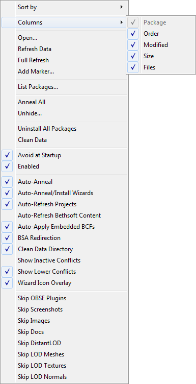
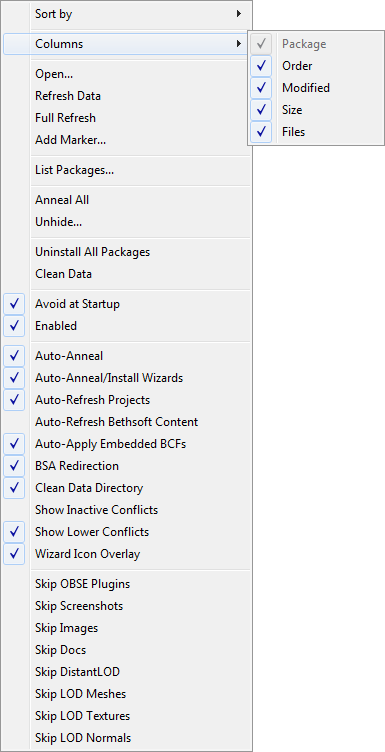


| Column Header Context Menu | ||
|---|---|---|
| Command | Description | |
| Sort By | Sort By Active | Active installers will be sorted to the top. |
| Projects First | If this is checked, then project packages will be sorted to the top of the list. | |
| Package | Sort packages by package name. | |
| Order | Sort packages by install order. | |
| Modified | Sort packages by date modified. | |
| Size | Sort packages by size. | |
| Files | Sort packages by number of files they contain. | |
| Columns | Manual | Manually customize column width. |
| Fit Contents | Columns automatically adjust width to fit their contents. | |
| Fit Header | Columns automatically adjust width to fit all columns in view. | |
| Package | Display the Package (name) column. | |
| Order | Display the Order column. | |
| Modified | Display the (date) Modified column. | |
| Size | Display the Size column. | |
| Files | Display the (number of) Files column. | |
| Files.. | Open Folder... | Opens the Installers directory in Windows Explorer. |
| Unhide... | Opens a dialogue window allowing you to select which hidden packages to unhide. Projects are not supported yet. | |
| New Project... | Displays a dialog that allows you to create a new project and select some starting files for it. | |
| Refresh Data | Re-scans the Data directory (and all packages). Scanning of the Data directory is done once per run of Wrye Bash, when the
Installers tab is first opened. If you manually alter files in the Data directory after that, you had to run this command to update BAIN to reflect the changes. However
BAIN will now scan the Data directory for changes in files corresponding to the package(s) you run Quick Refresh (or
Refresh) on, so in most use cases (if the files you altered belong to a particular project/package) just use Quick Refresh. What this command basically
does is:
| |
| Full Refresh | This does a full refresh of all data files, both the contents of the game Data directory tree and Bash Installers folder, bypassing all skip refresh flags for projects. Notably this will recalculate CRCs for all files inside Data and Bash Installers (including project directories). Running this command will likely take aeons, and you seldom need it. | |
| New Marker... | Creates a marker for organising your packages. The ==will be added for you. | |
| Monitor External Installation... | When you absolutely cannot install a mod via BAIN, you can put BAIN into Monitor Mode using this command. It will scan the Data folder before and after you install the mod, then provide an option to create a Project from the changes it detects. | |
| List Packages... | Displays a list of projects and archives and copies the list to your clipboard. This is useful for posting your package order on forums, eg. when troubleshooting an install. | |
| Anneal All | Installs any missing files for active installers and corrects all install order errors. | |
| Uninstall All Packages | Uninstalls all the packages in the package list. | |
| Clean Data | Removes files from the Data folder that are not from one of the following sources:
[Game] Mods\Bash Installers\Bash\Data Folder Contents [timestamp] folder instead, where [timestamp] is the date and time the command was run.
| |
| Auto-Apply Embedded BCFs | Automatically apply Embedded BCFs to archives that have one. The new package will be created next to the archive that contains the BCF, and named as this archive prepended with "[Auto applied BCF] ". If a package with that name exists it will be overridden. BAIN used to try and do that automatically on refresh based on a setting (set by this column menu item), but this had many issues and was removed. | |
| Avoid At Startup | Toggles Bash to avoid the Installers tab on startup, thus avoiding unnecessary data scanning. Unless you're spending a lot of time in the Installers tab, you should enable this. | |
| Enabled | This enables/disables Bain itself. Preferred setting: Enabled (checked). | |
| Auto-Anneal | Toggles the auto-anneal process on/off. Preferred setting: enabled. | |
| Auto-Anneal/Install Wizards | Toggles whether or not to automatically install/anneal a package when finished with its wizard. | |
| Auto-Refresh Projects | Toggles the auto-refreshing of projects on/off, for all projects. This is useful when you have many big projects and you want to minimize the lag when you switch back to the installers tab, whereupon BAIN will (behind the scenes) scan the Bash Installers folder for changed projects/packages. While scanning packages (archives) is pretty fast, scanning projects is slow, however you will miss on updates done in the project directories (you will have to manually refresh) - so it's recommended to leave this enabled. If you are concerned about a particularly big project then consider enabling the Don't Refresh flag on that particular project. Keep in mind that Projects will be anyway refreshed once on Bash restart, irrespective of this setting (except if popular demand arises). | |
| Skip BethSoft Content | Toggles whether or not refreshing the Data directory will also scan Bethsoft BSAs, ESPs, and ESMs. Disabling this option will cause a significant increase in refresh time if the timestamps on the Bethsoft BSAs are changed. However, disabling this setting is the only way to allow BAIN to install Vanilla ESPs, ESMs, and BSAs. For example, DLC plugins which have been cleaned with xEdit and packed into a BAIN. Preferred setting: enabled (that is, skip installation of bethsoft content). | |
| BSA Redirection | Oblivion, Nehrim: At Fate's Edge, Fallout 3 & Fallout: New Vegas only. Uses Quarn's BSA redirection technique to avoid bugs with the engine's BSA system. This is compatible with both OBMM and Quarn's original BSA redirection approaches. | |
| Remove Empty Directories | If this is checked, then any empty subfolders of the Data directory will be deleted. This reduces some clutter (especially after uninstalling packages). | |
| Show Inactive Conflicts | If checked, then the conflicts report will show conflicts with inactive as well as active installers. Usually only active conflicts are of interest, however sometimes it's useful to review all conflicting packages. | |
| Show Lower Conflicts | If checked, then the conflicts report with show conflicts with lower order packages (or with lower ordering bsas in bsa conflicts view). If you're only interested in higher order conflicts, then uncheck this to remove some clutter from the report. | |
| Show Active BSA Conflicts | If checked, the contents of the selected installer active BSAs
are compared with the contents of other installers active BSAs and any conflicting resources (actually same name
resources) found are displayed in the conflicts list. Active bsas are installed bsas that have a correspondingly named
mod active in the load order.Lower and Higher conflicts has therefore a different meaning than loose file
conflicts. Higher means that the corresponding active mod has a higher load oder number (loads later) so its bsa will load last
and itsassets will be used. Note that this may lead to a package having its bsas appear in both Higher and Lower sections
depending on how they load. If Show Lower Conflicts is not checked lower loading
conflicting bsas won't be shown, again this is different than loose files, where lower installers (lower install
order) won't be shown. This function has some rough edges:
| |
| Wizard Icon Overlay | If checked, installers with a Wizard will have a magic wand image displayed over their icons. | |
| Global Skips | ||
| Skip **SE Plugins | Non-Skyrim only. If this is checked, files to go in the Data\[**SE]\Plugins folder will not be installed. | |
| Skip SKSE/Script Dragon Plugins | Skyrim and Enderal: Forgotten Stories only. If this is checked, files to go in the Data\SKSE\Plugins or Data\asi folder will not be installed. | |
| Skip Screenshots | If checked, then files from a Data\Screenshots directory will be skipped. | |
| Skip Script Sources | Skyrim, Enderal: Forgotten Stories, Skyrim: Special Edition & Fallout 4 only. If checked, loose script sources (.psc files) will be skipped. | |
| Skip Images | If checked, image files will be skipped. | |
| Skip Docs | If checked, document files will be skipped vice being swept to the Docs\ directory. | |
| Skip DistantLOD | If checked, then DistantLOD files in packages will be ignored. Useful if you're using Tes4LodGen to generate DistantLOD files. | |
| Skip LOD Meshes | If checked, landscape LOD meshes will be skipped. | |
| Skip LOD Textures | If checked, landscape LOD textures will be skipped. | |
| Skip LOD Normals | If checked, landscape LOD normals will be skipped. | |
| Skip BSL Files | Skyrim, Enderal: Forgotten Stories and Skyrim: Special Edition only. If checked, BSL Files will be skipped. | |
| Global Redirects | ||
| Rename String Translation Files | Skyrim, Enderal: Forgotten Stories, Skyrim: Special Edition & Fallout 4 only. If checked, string translation files will be renamed so that they are loaded for the language the game is currently run for, unless there are existing translation files for that language. | |
| Redirect Script Sources | Skyrim: Special Edition only. If checked, loose script sources (.psc files) installed
to the incorrect folders (source\scripts and source) will be redirected to
the correct folder (scripts\source).
Skip Script Sources must be off. |
|

 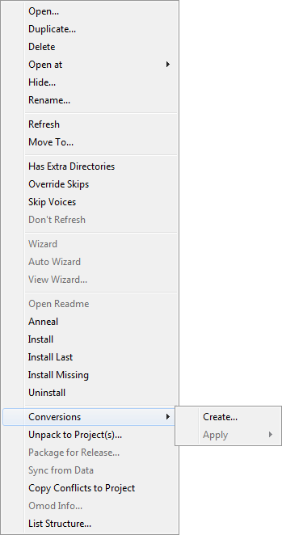
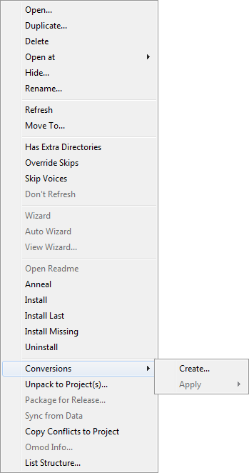


| Package Context Menu | |||
|---|---|---|---|
| Command | Description | ||
| File... | Open... | Opens the selected package(s) in the file system. | |
| Rename... | Renames the selected package(s) or marker(s). All selected items must be of the same type. For archives the extension will remain the same. | ||
| Duplicate... | Makes a duplicate of the selected package(s). | ||
| Hide... | Hides the package in the list, and moves it to the
[Game] Mods/Bash Mod Data/Hidden folder. |
||
| Delete | Deletes the selected package(s). Deleted packages are sent to the Recycling Bin. | ||
| Open at | Google... | Attempts to perform a Google search for the selected package's name. | |
| TES Nexus... | Attempts to open the selected package's page on TES Nexus. This command assumes that the trailing digits in a package's name is the package ID at the site. | ||
| [Game] Nexus... | Attempts to open the selected package's page on the game's matching Nexus. This command assumes that the trailing digits in a package's name is the package ID at the site. | ||
| TES Alliance... | Attempts to open the selected package's page on TES Alliance. This command assumes that the trailing digits in a package's name is the package ID at the site. | ||
| Open Readme | If BAIN detects a readme in the selected package, it will be opened. | ||
| Anneal | Installs missing files and corrects install order errors. Note: If an already installed file is changed outside of Wrye Bash control, Wrye Bash will not anneal that file. Anneal is relative to other installed packages. This is because we do not want to override user changes like cleaning plugins and the like. If you do want to override the change use Install Current instead. Note2: The change will be detected immediately in case of ini tweaks, mods or bsas, but on next Bash load for other files (like nifs etc). To detect the change without restarting (Quick) Refresh the package. | ||
| Quick Refresh |
Refreshes all info for the selected package(s), also checking the files that correspond to this package inside the Data directory. It will bypass skip refresh flags on projects (see case A below). BAIN does refresh package information whenever the installer's tab regains focus, except for projects if project skipping is on, but does not scan the Data folder but once on boot. So this command is useful if:
Case B) is relevant cause now Bash will recheck the files in Data that would belong to the packages that are being refreshed. This was not the case in 306, where you needed a full Refresh Data, which is now pretty much deprecated. |
||
| Move To... | Moves the selected package(s) to the specified position. | ||
| Install... | Installs the selected package, preferring a BAIN or FOMOD wizard if it exists. | ||
| Advanced Installation.. | Install Current | Fully installs the package except for files that would be overridden by later packages. | |
| Install Missing Files | The same as Install, except that it only installs missing files â i.e. it will not override any currently existing files. | ||
| Install Last | Moves the package to the end of the order list and installs it. | ||
| FOMOD Installer... | Runs the FOMOD wizard for this package, if it has one. | ||
| Wizard Installer... | Manual Wizard... | Runs the BAIN wizard for the package, if it has one. | |
| Auto Wizard... | Runs the BAIN wizard for the package, if it has one, selecting the default options. | ||
| View Wizard... | Archives Only. Opens the wizard.txt for viewing. | ||
| Edit Wizard... | Projects Only. Opens the wizard.txt in your system's default .txt editor. |
||
| Uninstall | Uninstalls the package. If Auto-Anneal is active (the default) then files from earlier packages that were previously overridden will be installed as required. | ||
| Package.. | Refresh | As Quick Refresh below. Refresh will however recalculate the CRCs for all selected items from scratch, which is not what you usually need (for projects especially it will take much longer than for packages, cause to calculate the CRC of a project all the individual CRCs of all the files in the project folder must be recalculated). Bash will of course recalculate CRCs for files that have their dates/sizes changed anyway, so forcing CRC recalculation with Refresh is only needed if you changed the contents of a file inside a project without changing its modification time and its size - that's super rare, you most probably just need Quick Refresh below. | |
| Export Achlist | This exports a file list of the files configured to be installed by this installer (except top level files and docs installed in Data/Docs folder). This list is used when the CK asks for a list of files to make new BSA files, for use when uploading to Bethesda.net. It will generate a
installer-name.achlist file inside the Mod Info Exports directory in the game (exe) folder. Mod Info Exports will be created if it doesn't exist. If an achlist with the same name exists it will be overwritten. Import the ACHList Bash generated and it will then package your files into the proper archives for upload. Available only for Skyrim: Special Edition & Fallout 4. |
||
| Pack to Archive... | Projects only. Packs the project to an archive. It defaults to .7z, but also supports .zip. | ||
| Package For Release... | Projects only. Just like "Pack to Archive" except it doesn't archive the following: thumbs.db, desktop.ini, and any folder that begins with "--". | ||
| List Structure... | Generates a list of the files and directories in a package. Useful for posting package structure on forums, eg. when troubleshooting an install. | ||
| Sync From Data | Synchronize the package with files from the Data directory. This is essentially the reverse of Install... since it copies from the Data directory to the package rather than the other way around. | ||
| Unpack To Project(s)... | Archives only. Unpack the archive to a project. | ||
| Copy Conflicts to Project | Copies all files that conflict with the selected package into a new project. Conflicts with inactive installers and lower order packages are included as if Show Inactive Conflicts and Show Lower Conflicts options were selected. Useful for comparing conflicting resources. | ||
| BAIN Conversions | Create... | Archives only. Creates a new Bain Conversion File. | |
| Apply→[BCF] | [BCF] is the name of a Bain Conversion File listed in the Apply submenu. Selecting a BCF applies it to the selected package. | ||
| Has Extra Directories | BAIN only recognises a limited set of subdirectories of the Data folder (the
standard game directories), and skips any unrecognised subdirectories. Checking this option will cause BAIN to install unrecognised subdirectories (Unless the files within are on the list of files which are always skipped such as .exe files, see
Skipped Files)
NB: extra directories will not be taken into account at all when calculating package structure. There must be at least some standard game directory or a data file (plugin, bsa/ba2, ini) in the package for BAIN to recognise its structure. |
||
| Override Skips | If this is checked, Bain will not skip over files that would normally be skipped due to a global skip option. | ||
| Skip Voices | If this is checked, Bain will skip over any voice files in the package. This is useful if the voice files are empty and/or the user prefers not to use them. If this option is used, then the user should also use Elys' Universal Silent Voice extension to prevent dialog subtitles from fading too rapidly. | ||
| Don't Refresh | When refreshing installers (when switching out and in the installers tab), this project won't be scanned for changes. The project will only get refreshed during the first refresh of BAIN on a restart, or by manually refreshing (see Quick Refresh and co) | ||
| Omod Info... | Projects only. Allows you to read/write omod configuration info. | ||
| Sub-Package Context Menu | |
|---|---|
| Command | Description |
| Select All | Selects all the sub-packages in the list. |
| Deselect All | Deselects all the sub-packages in the list. |
| Toggle Selection | Deselects currently selected sub-packages, and selects currently deselected subpackages. |
| List Sub-Packages | Generates a forum-formatted list of sub-packages in the package, highlighting checked packages with ***.
|
| Plugin Filter Context Menu | |
|---|---|
| Command | Description |
| Select All | Selects all the plugins in the Filter list. |
| Deselect All | Deselects all the plugins in the Filter list. |
| List Plugins | Generates a forum-formatted list of plugins in the Filter list, highlighting checked plugins with ***.
|
| Rename... | Rename the selected plugin. Renamed plugins are displayed in the Filter list with a * before their name and are displayed in the information tabs as original name -> new name. Renaming a plugin before installing it is preferable to renaming a BAIN-installed plugin through other means, as the former allows BAIN to keep track of it, whereas the latter does not.
|
| Reset Name | Resets the selected plugin's name to its default name. |
| Reset All Names | Resets all renamed plugins to their default names. |
| Jump to Mod | Jumps to this plugin in the Mods tab. You can double-click on the mod to the same effect. |
Mods Tab Back to top
The Plugin Details Panel Back to top

| Item | Description |
|---|---|
| File Name | The filename of the selected plugin. Note that changing this does not change the filename in the Masters Lists of any dependent plugins. |
| Modification Time | This field is editable, by clicking in the box. After changes are made, click the Save button to commit your changes to the plugin, or Cancel to discard them. Note: For Oblivion, Nehrim: At Fate's Edge, Fallout 3 & Fallout: New Vegas this affects the load order of the selected plugin. For Skyrim, it has no effect, except that if it is changed for a plugin obtained from Steam Workshop, it will cause the plugin to be redownloaded as Steam Workshop uses modification time to detect file versions. For Skyrim: Special Edition, there was a bug at some point, with DLC Load Order being set by Date / Time Stamp (only the DLCs were affected by this). The only way to re-arrange your Skyrim: Special Edition DLC plugins Load Order was to edit their modification time, so that they follow each other by for example one minute. The bug was fixed in a later patch - but anyway Bash won't let you change the load order or the modification times of the DLCs. The game always loads them before other masters and in the following order: Dawnguard -> Hearthfire -> Dragonborn. Bash will timestamp them in one minute intervals following Skyrim/Update esms, so even the buggy patch behaves correctly. |
| Author | Who made the selected plugin. |
| Description | Commonly used for a short description of what the selected plugin does, plus the version number and any Bash Tags the author sets. |
| Masters List | The Masters list shows the plugins that the currently selected plugin depends on, the load order
(Mod Index) of that master in the plugin file, and the current load order of the master plugin if present and active. Plugins' entries in the Masters List may be renamed to reflect name changes of the plugins themselves. To rename a master, first allow editing from the masters list column context menu and then either left-click the plugin entry and edit it in the column display, or right-click the plugin and select Change To...then select the replacement plugin. Do not use this to change a plugin's masters to unrelated plugins, as this will cause file corruption. If editing is allowed, items that are renamed inside Bash internal dictionaries appear bolded - on clicking on the masterlist they take their renamed values and the Save and Cancel buttons are enabled. You may click on Save to save the new master list, or on Cancel to revert displaying the non renamed masters. Disallowing edits will revert the list to the original and disable Save and Cancel buttons (if no other fields are edited). |
| MI | Master Index of the mod. This means the actual number of the masters in succession starting with e.g. 00 Skyrim.esm, 00 Oblivion.esm, etc. |
| Current LO | Current load order in relation to the load order of the Active Plugins. Active Plugins should correspond with plugins.txt. |
| Bash Tags | This field lists any Bash Tags that are assigned to the selected plugin. Right-clicking will display a list of Bash Tags and allow you to add or remove tags by checking or unchecking them. |
Color scheme for Plugin Masters (MI &Current LO) Back to top
In the table below suppose you see details for displayed_mod.esp which depends on [Oblivion.esm, displayed_mod.esm, some_other.esp, some_other2.esp] in this order. So the MIs displayed in the master list for Oblivion.esm, displayed_mod.esm, some_other.esp, some_other2.esp are 0, 1, 2, 3.
| Checkbox Colour | Meaning |
|---|---|
 | Good. Matches the Master Index of the the Current load order. |
 | Good, but the Master Index is not in sync with the Current
load order. So for instance if you have a load order with active mods (in this order) [Oblivion.esm, displayed_mod.esm, yet_some-other.esp, some_other.esp, some_other2.esp, displayed_mod.esp], some_other.esp will display in green as its current load order is 3 while its master index is 2. Note that the relative load order of masters is the same as it is in the MI list. |
 | The plugin loads in a different order compared to its order in
the master array of displayed_mod.esp So for instance if you have a load order with active mods (in this order) [Oblivion.esm, displayed_mod.esm, some_other2.esp, some_other.esp, displayed_mod.esp], some_other.esp and some_other2.esp will display in orange as they load in different relative order than they are recorded in the master array of displayed_mod.esp. If a plugin has two masters that are siblings (one doesn't have the other as a master, so they can load in either order) and they are overriding the same record from an earlier master (e.g. both are overriding a record from the main game master file), then loading them in a different order will result in a different version of the overridden record being the "winner". But the plugin might depend on the winner being the one indicated by the order in which it references the masters. The plugin should be examined in xEdit (meaning any version) to see if it is best to alter the load order or if Sort Masters should be used to correct the issue. |
 | A Master that is missing. If unintended then you should check to make sure that you have not inadvertently renamed or removed the plugin. |
CSV Files Back to top
Wrye Bash uses CSV files for many of its plugin data related features. CSV files are a very widely supported type of spreadsheet file, and once exported may be edited in programs like Microsoft Excel, LibreOffice Calc or even in text editors such as Notepad or Notepad++.
CSV files are used by the Import/Export... commands as this allows much easier editing of record data in large batches or in systematic manners than in the Construction Set. The data may be exported, edited in the CSV, then imported again. The following notes apply to CSV files.
- Wrye Bash will ignore any lines in a CSV file for which the second column does not begin with
0x, so such lines can be used for comments. - For Sigil Stones and Spell Stats CSV exports, additional effects can be added to a stone/spell by appending effects to the end of a line, leaving one blank column between each effect. If any of the Script Effect columns are set to
None
then all the script effects for that effect will be ignored. - For the values of object stats such as price or weight or damage, etc., formulae may be used to work out the numerical values, but the file should contain the resulting numbers, not the formulae used.
- The faction lists for actors do not need to be complete - only the actor/faction pairs added or changed need to be listed. A rank of -1 in a faction will remove an actor from that faction.
- Relation lists do not need to be complete for each faction - only the added/changed main/other pairs need to be listed.
CSV files can also be used when building the Bashed Patch, for a number of options. The Bashed Patch builder will automatically detect the presence of any CSV files in the Data\Bash Patches folder and have the correct filename ending. These filename endings are:
| Import Type | Required Filename Ending |
|---|---|
| Replace Form IDs | Formids.csv |
| Import Factions | Factions.csv |
| Import Names | Names.csv |
| Import Relations | Relations.csv |
| Import Spell Stats | Spells.csv |
| Import Stats | Stats.csv |
Context Menu Commands Back to top
The tables below detail the full list of context menu commands available in the Mods tab.

 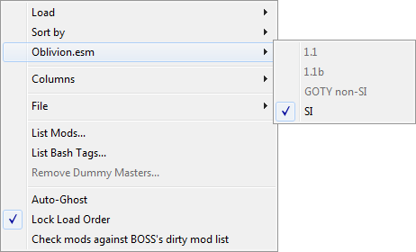
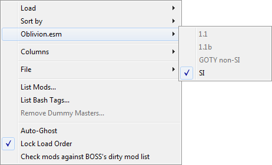


| Column Header Context Menu | ||
|---|---|---|
| Command | Description | |
| Sort By | This submenu allows you to choose by which column the plugin list is sorted. This is equivalent to clicking on a column header. You can also choose to sort by Type, which will place .esms before .esps regardless of the sorting criteria, or by Selection, which places selected plugins before unselected plugins regardless of criteria. | |
| Columns | This submenu allows you to choose which columns are visible in the mod list. | |
| Files.. | Open Folder... | Opens the Data folder in Windows Explorer. |
| Unhide... | Opens a dialogue window allowing you to select which hidden plugins to unhide. | |
| New Bashed Patch... | Creates a new Bashed Patch plugin. Useful if you accidentally delete your current one or wish to have more than one. | |
| New Mod... | Creates an empty plugin. | |
| New Mod (masterless)... | Creates an empty plugin with no masters. | |
| Active Mods | Activate All | Activates all the plugins in the mod list. If more than 255 mods are present Bash will activate all it can from the bashed patches, then non mergeable and then mergeable mods then will display an error message. Bash will try to activate mods in their load order. |
| De-activate All | Deactivates all the plugins in the mod list. Some plugins will not be deactivated (for instance Fallout 4 DLCs) as the game force loads them when present. | |
| Activate Selected | Activate only the mods selected in the mod list interface - warning: their masters won't be activated ! | |
| Save Active Mods List | Saves the currently active mods to a new list. | |
| Edit Active Mods Lists... | Allows the deletion and renaming of active mods lists. | |
| [Active Mods List] | [Active Mods List] items are listed below the separator in the Active Mods submenu. Clicking a list name will apply the list, trying to activate exactly the plugins that are listed in it. | |
| Oblivion.esm | Oblivion only. This submenu relates to Oblivion.esm Swapping. | |
| List Mods | This outputs a BBCode-formatted load order, including version information, activation status and major load order errors. It can be useful for debugging a broken load order. If the 'c' keyboard key is pressed when this command is selected, the CRCs of plugins will also be displayed in the output. | |
| List Bash Tags... | This outputs a BBCode-formatted list of all the Bash Tags applied to the plugins in your load order, and where/how the Bash Tags were specified. It can be useful for figuring out which tags come from where. | |
| Export Bash Tags... | Exports all currently applied bash tags to a CSV file. Plugins without tags will not be exported. | |
| Import Bash Tags... | Imports applied bash tags from a CSV file. Plugins not listed in the CSV file will be left untouched. | |
| Clear Manual Bash Tags | Removes all manually applied bash tags. Tags from plugin descriptions, LOOT masterlists and userlists and BashTags files will be left untouched. | |
| Auto-Ghost | The game engine has a bug where it reads all the plugins in the Data folder, and this can affect performance when the number of plugins is around 300+. Auto-Ghosting adds a .ghostextension to all inactive plugins automatically to prevent the game engine reading them, and so helping to avoid the performance drop. When a ghosted plugin is activated, the .ghostextension is removed, allowing it to function as normal. Note that other utilities will not recognise ghosted plugins, so there are options available for individual plugins to control which get ghosted. | |
| Lock Load Order | This prevents other utilities from altering the plugin load order. More accurately, it detects changes to the load order (modification times for earlier games, text files for later ones) when Wrye Bash starts or is focused (ie. on top of all other program windows) and reverses those changes. | |
| Lock Active Plugins | This enhances Lock Load Order to make it reverse changes to the enabled/disabled status of plugins in your load order as well. | |
| ESL-Flag Bashed Patches | Skyrim: Special Edition & Fallout 4 only. If enabled, then any built Bashed Patches will automatically be ESL-flagged, saving a load order slot. | |
| Debug Mode | Activates debug output. Only a few commands will display any debug output, but it may be useful for troubleshooting. | |
| Remove Dummy Masters... | Removes all dummy master files created using Create Dummy Masters... on a plugin. | |
| Check mods against LOOT's dirty mod list | LOOT's masterlist contains information on dirty plugins that can be used by Wrye Bash to highlight these plugins in the mod list. Checking this setting tells Wrye Bash to use this information. Note that the detection will try to use masterlists from the user's system-wide LOOT installation, if those exist, otherwise Bash falls back to the taglists it comes bundled with. | |
| Recalculate CRCs | Clean stale CRCs from cache. Workaround for buggy CRC updates in previous versions of Bash. Use for instance when plugins show as mismatched in BAIN when they are not. | |
| Mod Checker... | Launches the Mod Checker. | |
 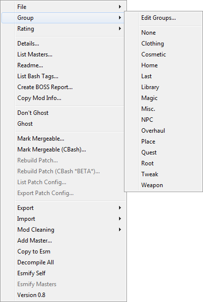
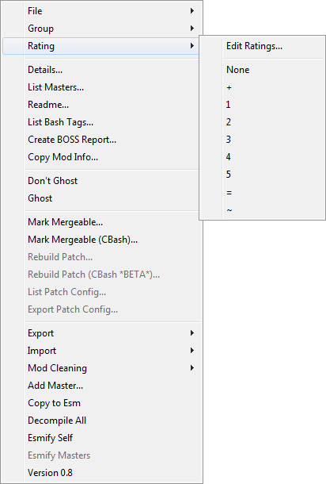
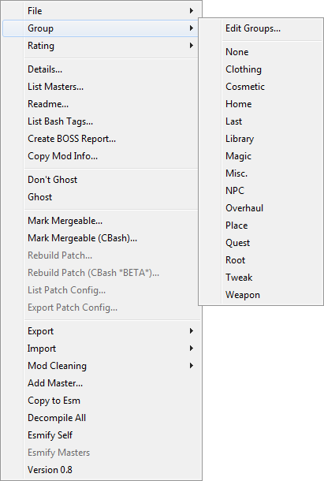
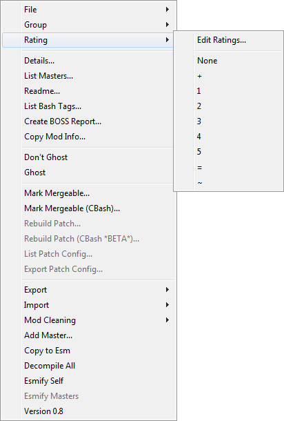

 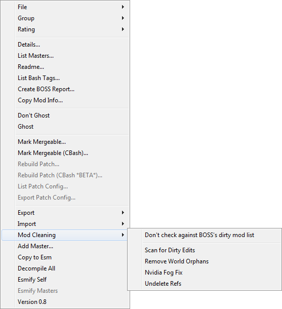
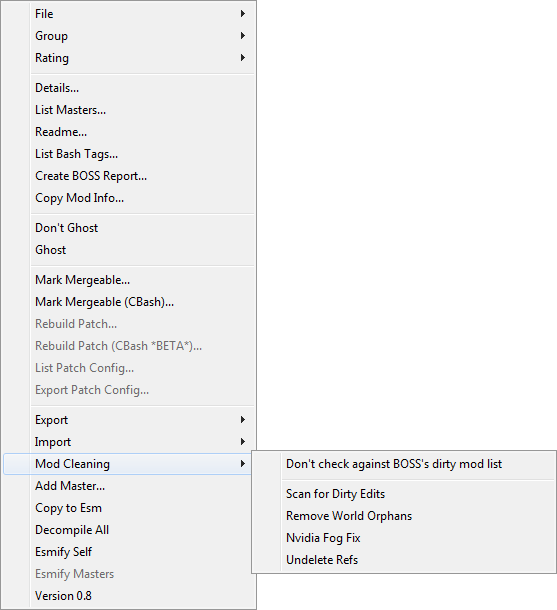
| Plugin Context Menu | ||
|---|---|---|
| Command | Description | |
| File.. | Duplicate... | Creates a duplicate of the selected plugin in the Data folder. |
| Hide... | Moves the selected plugin to the [Game] Mods/Bash Mod Data/Hidden subdirectory. If the plugin's author
is defined and there is a Bash Mod Data/Hidden subdirectory of the same name, the plugin will be placed there. If not and the
plugin's group is defined and there is a Bash Mod Data/Hidden subdirectory of the same name, the plugin will be placed there
instead. Otherwise it will be placed inside Bash Mod Data/Hidden. | |
| Redate... | Change the modification time of the selected plugin. If more than one plugin is selected, then all the plugins will have their modification times altered, with the first in the list being set to the specified time and the rest at one minute intervals from that time. | |
| Delete | Deletes the selected plugin(s) and any backups of them, but not snapshots. Deleted plugins are sent to the Recycling Bin. | |
| Backup | Creates a backup of the selected plugin in [Game] Mods\Bash Mod Data\Backups.
On first run, the backed-up plugin has f appended to its file extension, giving e.g. .espf. | |
| Revert To Backup... | Reverts the selected plugin to the last backup made of it. | |
| Revert To First Backup... | Reverts the selected plugin to the first backup made of it. | |
| Snapshot... | Creates a snapshot copy of the selected plugin in Bash\Snapshots.
Snapshot filenames are appended with -n where n is a number between 01 and 99. Eg. the first snapshot of
Plugin.esp is Plugin-01.esp. The number is incremented each time the plugin has a snapshot
taken. Additionally, if there is a version line in the plugin's description field, then the snapshot number will be
appended to the version number in the same manner. | |
| Revert To Snapshot... | Reverts the selected plugin to a selected snapshot. | |
| Groups | Export Group | Exports the selected plugin's groups to a CSV file as plugin name/groups pairs. |
| Import Group | This will set the groups for selected mods as specified in a csv file (as created by the Export Groups command). If selected mods are not assigned a group in the file nothing happens. | |
| Edit Groups... | Add: add a new group to existing groups. Group names can be in Unicode. | |
| Rename: rename selected group. Mods that belong to it will have the group renamed. | ||
| Remove: delete selected group. Deleting a group removes it from mods that belong to it. | ||
| Refresh: pick up assigned groups and add them to the existing ones. Use it after importing groups from a file to update available groups. | ||
| Sync: sync the list of available groups to the assigned ones - in other words delete unassigned groups. | ||
| Default: reset the list of available groups to the default ones. This won't delete non default assigned groups. It's a feature. Use Refresh to pick up your groups and add them to the defaults. | ||
| Groups Menu | Set a group for the selected plugin(s). Groups that are assigned to the selected plugins appear checked. They provide no automatic functionality, other than to place hidden plugins in group folders provided those folders already exist. Use them to group plugins together so you can disable or enable them at once, etc. Note to old timers: BALO has been removed taking BALO groups for the ride - those of you who remember them, shed a tear goodbye. | |
| Rating | A purely cosmetic feature, this allows you to assign different rating values to plugins. | |
| Move To... | Moves the selected plugin(s) to the specified position. Note that the way this works with
inactive plugins may seem a bit counter-intuitive. Since inactive plugins do not have indices, it will be moved to occupy
the selected position, but since it's inactive, the next active plugin after it is the one that actually receives
the position. In practical terms, this means you will often end up moving an inactive plugin to one spot before the one you
wanted and adjusting its position via drag and drop or via Ctrl+Arrow Keys will be necessary. | |
| Order By Name | Set the load order of the selected plugins starting at the lowest ordered mod, sorting them alphabetically. | |
| Details... | Displays a list of the records in the selected plugin, similar to the Details view in the Construction Set. | |
| List Masters... | Outputs a list of the selected plugin's masters. | |
| Readme... | Attempts to open the selected plugin's associated readme in the Doc Browser. | |
| List Bash Tags... | Outputs a BBCode-formatted list of all the Bash Tags applied to the selected plugin, and where/how the Bash Tags was specified. It can be useful for debugging a broken load order. | |
| Create LOOT Entry... | Creates LOOT masterlist entries based on the tags you have applied to the selected plugin(s). Also tries to figure out the URL that the plugin came from based on the BAIN package it was installed from. | |
| Copy Mod Info... | Outputs a report on the selected plugins(s) with the info from the currently displayed columns. | |
| List Dependencies | Displays and copies to the clipboard a list of mods that have the currently selected
mod as master. Active mods are prefixed with their load order while merged, imported and inactive mods are prefixed with
++, ** and __ respectively.
| |
| Jump to Installer | Jump to the installer of the selected mod, if the Installers tab is displayed and enabled and the plugin has an installer. You can Alt-Click on the mod to the same effect. | |
| Disallow Ghosting | Don't ghost the selected plugins when they are inactive, even if Auto-Ghost is enabled. Will unghost the selected plugins if enabled. | |
| Ghost/Unghost | Manually ghost/unghost selected plugins (active ones can't be ghosted). Ghosting a plugin will clear its Disallow Ghosting flag (if set). This will survive autoGhost till next restart. If you want your changes to persist, mark the plugin as disallow ghosting. | |
| Allow Ghosting | Displayed if multiple plugins are selected. Unchecks Disallow Ghosting for the selected plugins. | |
| Invert Ghosting | Displayed if multiple plugins are selected. Toggles the status of Disallow Ghosting for the selected plugins. | |
| Mark Mergeable... | Not available for Skyrim: Special Edition & Fallout 4. Scans the selected plugin(s) to determine if they are mergeable or not. Wrye Bash does this automatically, but this command reports why mods are unmergeable. | |
| Check ESL Qualifications | Skyrim: Special Edition & Fallout 4 only. Checks if the selected plugin(s) can be ESL-flagged using Add ESL Flag. Wrye Bash does this automatically, but this command reports why mods can't be ESL-flagged. | |
| Rebuild Patch... | Rebuild the selected Bashed Patch using the Python patcher. | |
| List Patch Config... | Displays a summary of how the selected Bashed Patch is configured. | |
| Export Patch Config... | Exports the configuration of the selected Bashed Patch to a file. | |
| Export | Cell Block Info... | Oblivion & Nehrim: At Fate's Edge only. Exports a list of cell block Editor IDs and their coordinates in the selected plugin to a CSV file. |
| Editor Ids... | For advanced mod authors only. Exports the Editor IDs of the records in the selected plugin to a CSV file. | |
| Factions... | For advanced mod authors only. Exports the factions defined for actors in the selected plugin to a CSV file, which can be imported to a plugin or used in the Bashed Patch's Import Factions option. | |
| Names... | Exports the names of the objects in the selected plugin to a CSV file. All the records displayed in the Construction Set's Objects Window are supported - cells and dialogue are not. As well as being useful for the usual large-scale changes, this command is useful for translators. The CSV file can also be used in the Bashed Patch's Import Names option. | |
| NPC Levels... | For advanced mod authors only. Exports NPC level info from the selected plugin to a CSV file. Only NPCs which are dynamically levelled (ie. offset from the player's level) will be exported. | |
| Map Markers... | Oblivion & Nehrim: At Fate's Edge only. Exports information about the map marker data in the plugin. | |
| Prices... | Exports the prices of objects in the selected plugin to a CSV file. | |
| Relations... | For advanced mod authors only. Exports the faction relationships in the selected plugin to a CSV file. This does not export race relationships. The CSV file can also be used in the Bashed Patch's Import Relations option. | |
| Ingredients... | Exports alchemy ingredient record data from the selected plugin to a CSV file. | |
| Scripts... | Exports the scripts in the selected plugin to a series of text files. The scripts may then be edited in the text files and re-imported. Warning: Do not change the first three lines of each text file exported when editing unless you know what you're doing. | |
| Sigil Stones... | Exports the stats of sigil stones from the selected plugin to a CSV file. | |
| Spells... | Exports spell stats in the selected plugin to a CSV file. The CSV file can also be used in the Bashed Patch's Import Stats option. There are two modes of export, Basic and Detailed. The spell stats exported in Basic mode are as follows.
| |
| Stats... | Exports stats for the following record types in the selected plugin to a CSV file. The CSV file can also be used in the Bashed Patch's Import Stats option.
| |
| Import | Editor Ids... | For advanced mod authors only. Imports the Editor IDs for records in the selected plugin from a CSV file. As well as updating the Editor IDs of records themselves, this also updates any Editor IDs referenced in normal (non quest stage or dialogue) scripts to reflect the changes. Note: You may have to recompile any altered scripts in the Construction Set. If you wish to update script references after the Editor IDs were changed, edit the CSV file and add another column after the eid column and give the old Editor IDs in the new column. E.g. MISC Oblivion.esm 0x0123456 newEid oldEid
|
| Factions... | For advanced mod authors only. Applies to the selected plugin the factions defined for actors in a CSV file previously exported using Wrye Bash. | |
| Names... | Imports names for objects from a CSV file (or other mod) into the selected plugin. Only records that already exist in the plugin will have their names changed, no records will be added. | |
| NPC Levels... | For advanced mod authors only. Imports NPC level info from a CSV file into the selected plugin. This does not affect Creature levels or leveled lists, nor does it affect the levels of NPCs in existing saves, for which Update NPC Levels must be used. As well as the format exported by Export NPC Levels, an older format is supported:
| |
| Map Markers... | Oblivion & Nehrim: At Fate's Edge only. Imports map marker data from a CSV file into the selected plugin. | |
| Prices... | Imports the prices of objects from a CSV file (or other mod) into the selected plugin. | |
| Relations... | For advanced mod authors only. Imports faction relationships from a CSV file into the selected plugin. | |
| Ingredients... | Imports alchemy ingredient record data from a CSV file into the selected plugin. | |
| Scripts... | Imports scripts from a series of text files into the selected plugin. Note: You must recompile any altered or new scripts in the Construction Set. | |
| Sigil Stones... | Imports the stats of sigil stones from a CSV file into the selected plugin. | |
| Spells... | Imports spell stats from a CSV file into the selected plugin. Only records that exist in the plugin will have their spell stats change, no records will be added. The spell stats supported are those exported by Export Spell Stats..., and importing uses the same Basic and Detailed mode distinctions. | |
| Stats... | Imports stats from a CSV file into the selected plugin. Only records that exist in the plugin will have their stats change, no records will be added. The object stats supported are those exported by Export Stats.... | |
| Face... | This command relates to Face Importing. | |
| FormIDs... | For advanced mod authors only. It is useful if you want to replace the records in one master with equivalent records in another master. This command replaces the Form IDs in a plugin according to a CSV file that acts as a Form ID mapper. An example of such a file is Data\Bash Patches\TI to Cobl_Formids.csv. The instructions below detail how to create a Form ID mapper.
If you've completely swapped from one base plugin to another, you may wish to remove the old dependency. This can be done using TES4Edit's Batch Change Referencing Recordscommand together with the CSV file created. TES4Edit will also change the definition of a Form ID, rather than just any references to it, unlike Wrye Bash. | |
| Mod Cleaning | Don't check against LOOT's dirty mod list | Overrides the setting in the column header context menu for the specific plugin(s) selected. |
| Scan for Dirty Edits | Oblivion & Nehrim: At Fate's Edge only. Scans the selected plugin for Identical To Master records and deleted references, outputting counts of the dirty edits found. The dirty edit counts may differ from the output provided by TES4Edit as that includes other "junk" records in the ITM count. Wrye Bash does not count these junk records as they are non-harmful. | |
| Scan for UDR's | All but Oblivion & Nehrim: At Fate's Edge. Behaves as the above Scan for Dirty Edits, but only for deleted references. | |
| Remove World Orphans | Some plugins have a mild form of corruption where exterior cells of new worldspaces in an esp master of the plugin are included in the plugin even if they are not edited, but the parent worldspace is not included, creating "orphaned" cells. This command removes these "orphans". | |
| Nvidia Fog Fix | Oblivion & Nehrim: At Fate's Edge only.
Systems with Nvidia graphics cards can suffer a black
screen bug when interior cell fog distances are set to 0.
This command scans the selected plugin(s) and sets any
zero-valued fog distances to 0.001.
It is advised that mod authors use this on their mods before release. |
|
| Undelete Refs | Removed. Use xEdit for cleaning. | |
| Add Master... | Removed. Use xEdit for such low-level editing. | |
| Copy To Esm/Esp | Creates a .esp copy of a .esm or vice versa. | |
| Add/Remove ESM Flag | The distinction between esp and esm plugins is not dependent on their file
extensions, but on a bit in the file. This command toggles this bit so that .esp files behave as .esm files and vice versa. It is
useful for creating and editing plugins with .esp files as masters, which cannot be done in the Construction Set otherwise.
Esm files cannot be edited in the Construction Set as esp files, so this command is disabled for them. NB: the file extension won't change
and this is used by Bash so do not mess with it. Warning: Make sure to toggle any plugins back before playing the game, otherwise savegames will get confused, possibly causing bugs and corruption. To toggle the masters back use the same command on the plugin which should now be named Remove ESM Flag. | |
| Add/Remove ESL Flag | Skyrim: Special Edition & Fallout 4 only. Toggles the ESL flag
on the selected plugin, either turning it into an ESL if it does not yet have the flag set or turning it back into an ESP if
it does have the flag set. This is only possible if the mod is ESL-capable - see the Check ESL Qualificationsoption for more information. | |
| Add/Remove ESM Flag To/From Masters | This works as Add/Remove ESM Flag does, but toggles a plugin's masters rather than the plugin itself. The load order of plugins will change to reflect their new status but since the modification time won't change they will revert back to their original positions for modification time based load orders. Be sure to backup your load order for Skyrim and newer games. | |
| Create Dummy Masters... | Creates an empty plugin for each missing master a mod has. This is useful for allowing TES4Edit to open a 'Filter' patch without having all of the required masters. These dummy plugins can later be removed using the Remove Dummy Masters command. | |
| Decompile All | Oblivion only. Undoes the effect of a Compile Allperformed in the Construction Set. It will not do anything to the game's master file. | |
| Version 0.8 | Oblivion only. Resets the file version number of the selected plugin so that it can be edited in an older version of the Construction Set, which is required when making certain changes due to bugs in the latest Construction Set. Warning: It is possible that this may cause data loss. | |
| Mod's Masters List Column Header Context Menu | ||
| Command | Description | |
| Sort By | This submenu allows you to choose by which column the masters list is sorted. This is equivalent to clicking on a column header. | |
| Allow editing | Allow (or disallow) editing of the masters list. Enables (or disables) the items' context menu entries. | |
| Clear Renames | Clear internal Bash renames dictionary | |
| Mod's Masters List Items Context Menu | ||
| Command | Description | |
| Change To... | Rename a master by selecting the desired replacement esp/esm from the mods directory. It will add the
plugin to the internal renames dictionary of Bash and bold it on any master list that it appears. Hit Save to edit the selected file
permanently. Equivalent to left clicking the selected master for a second time, just allows you to select the mod from the Data
directory instead of entering the name manually.
| |
Advanced Bashed Patch Back to top
You can have multiple Bashed Patches, though one is generally enough per save profile or character. The only requirement for Wrye Bash recognising a plugin as a Bashed Patch is that its Author
field is set to BASHED PATCH
, so you can name a Bashed Patch whatever you want.
Viewing & Editing The Bashed Patch Back to top
As the Bashed Patch commonly has .esp files as masters, viewing and editing it can be more complicated than for the average plugin. If you wish to view its contents, it is easiest to use TES4Edit, which can also be used to edit most types of data in plugins. To edit it using the Construction Set or Creation Kit (required when editing scripts), you'll need to first use the Add ESM Flag To Masters command on it. Be sure to use Remove ESM Flag From Masters
before attempting to play the game.
Bash Tags Back to top
Wrye Bash uses a tagging system to determine what mods can and should have which records available for importing into the Bashed Patch. These Bash Tags are specified by mod authors in the header descriptions of their plugins, are applied using data from LOOT's masterlist and userlist files, and are read from text files in the [GAME]\Data\BashTags folder.
In increasing priority the Bash Tags sources are:
- Description in the header of the plugin (can be edited in WB)
- taglist.yaml (LOOT) - Only if no LOOT masterlist was found on the user's computer
- masterlist.yaml (LOOT)
- userlist.yaml (LOOT)
[GAME]\Data\BashTags\[PLUGIN NAME].txt- Tags that were manually set in Wrye Bash
Bash includes a LOOT masterlist parser. It will try and parse the masterlist and userlist files, if it finds them in the
%LOCALAPPDATA%\LOOT\GAME directory. If that fails (e.g. if the files are not there) it will fallback to
a Mopy\Bash Patches\GAME\taglist.yaml file bundled with Bash, keep it there. For userlist and masterlist
relative priority and role see the LOOT docs.
For each plugin, Wrye Bash will read the file [GAME]\Data\BashTags\[PLUGIN NAME].txt, if it exists.
Tags specified in this file will override ones in the description and the LOOT masterlist.
These files are intended for people besides the mod author to share plugin suggestions.
For example, a guide creator could create files with fitting Bash Tags and package the BashTags folder as an archive,
distribute the archive as a download with the guide, and users can then simply install the archive with BAIN to get the right Bash Tags.
Wrye Bash has the ability to create these files through its GUI too - right click on a plugin's Bash Tags field in the Mods Tab sidebar and click Copy to Data/BashTags
to create or rewrite the matching file, placing all currently active Bash Tags in there.
The format for these files is simple - each line can specify one or more tags to be added or removed, in which case a minus should be prepended to the tag, separated by commas. An example to demonstrate their usage follows:
# Everything after a '#' is a comment
# Every line that is not a comment
# or empty will add or remove tags
# from the plugin
Delev, Relev # This line will add two
# new tags to the plugin...
-C.Water # ...while this line removes
# a tag from the plugin
# Addition and removal can also be
# done in one line:
C.Location, -C.LockList
# The result of this file would be:
# Added: C.Location, Delev, Relev
# Removed: C.LockList, C.Water
Bash Tags may also be set manually, by right-clicking a plugin's Bash Tags field in the Mods Tab sidebar and checking or unchecking tags in the list displayed. If you wish to revert to automatic tagging, choose Automatic
in the right-click list. If you are a mod author, you may wish to use Copy to Description
for your mod's plugins before releasing it to ensure that users have the tags applied automatically.
Note: A Bash Tag should only be applied when it is important that the plugin's change to whatever the Tag relates to is preserved. If a change your plugin makes is not important to the functioning of your mod, do not add a Bash Tag for it. Doing otherwise negates the purpose of the Bash Tag system.
Note: Not all record types or bash tags are available/supported for each game.
| Special Function Bash Tags | ||
|---|---|---|
| Tag | Used When The Mod | Specific Record Types/Changes Supported |
| Deactivate | Should be deactivated. | N/A |
| Filter | Does not require all its masters to be installed to function. See the Merge Filtering section for more information. | N/A |
| IIM | Is to be used in Item Interchange Mode. See the Item Interchange Mode section for more information. | N/A |
| MustBeActiveIfImported | Must be active to function correctly even if it is imported into the Bashed Patch. Currently this tags only function is that Bash won't ask to deactivate the plugin. | N/A |
| NoMerge | Should not be merged even though it is technically mergeable. | N/A |
| Removed & Deprecated Bash Tags | |
|---|---|
| Tag | Replacement/Notes |
| C.GridFlags | Older name for C.ForceHideLand. |
| Derel | Older name for Relations.Remove. |
| Invent | Split into Invent.Add, Invent.Change and Invent.Remove. The behavior of the old Invent tag is equivalent to Invent.Add combined with Invent.Remove. |
| InventOnly | Use the Invent tags mentioned above in conjunction with IIM instead. |
| Merge | Obsoleted due to Merge Patches rework. |
| Npc.EyesOnly | Older name for NPC.Eyes. |
| Npc.HairOnly | Older name for NPC.Hair. |
| NpcFaces | Split into NPC.Eyes, NPC.Hair and NPC.FaceGen. Previous
behavior is equivalent to all three tags combined.
Warning: Previous versions allowed applying both NpcFaces and one of the two 'Only' tags above. This was undefined behavior, but thankfully no mods seem to have made this mistake. |
| Relations | Split into Relations.Add and Relations.Change. The behavior of the old Relations tag is equivalent to Relations.Add combined with Relations.Change. |
| ScriptContents | Dangerous tag that was never fully implemented. |
| Common Bash Tags | ||
|---|---|---|
| Tag | Used When The Mod | Specific Record Types/Changes Supported |
| Actors.ACBS | Modifies the (ACBS) Configuration subrecord of actors. | See the game-specific sections below for record types:
Not available for Fallout 4. |
| Actors.AIData | Modifies the (AIDT) AI Data subrecord of actors. | See the game-specific sections below for record types:
Not available for Fallout 4. |
| Actors.AIPackages | Modifies AI packages lists of actors. | Addition or removal of an (PKID) AI Package in the AI Packages subrecord in the following record types:
Not available for Fallout 4. |
| Actors.AIPackagesForceAdd | Adds to actor package lists. This tag forces the addition of packages even if they are removed by later-loading plugins tagged with Actors.AIPackages. | Addition of an (PKID) AI Package in the AI Packages subrecord in the following record types:
Not available for Fallout 4. |
| Actors.Anims | Modifies actor special animations lists. | Modification of the (KFFZ) Animations subrecord in the following record types:
Oblivion, Nehrim: At Fate's Edge, Fallout 3 & Fallout: New Vegas only. |
| Actors.CombatStyle | Modifies the assigned combat styles of actors. | Modification of the (ZNAM) Combat Style subrecord in the following record types:
Not available for Fallout 4. |
| Actors.DeathItem | Modifies actor death items. | Modification of the (INAM) Death Item subrecord in the following record types:
Not available for Fallout 4. |
| Actors.RecordFlags | Modifies actor record flags. | Modification of record flags in the following record types:
Not available for Fallout 4. |
| Actors.Skeleton | Modifies actor skeletons. | The following (NPC_) Non-Player Character or (CREA) Creature subrecords:
Oblivion, Nehrim: At Fate's Edge, Fallout 3 & Fallout: New Vegas only. |
| Actors.Spells | Modifies the Spells (also called Actor Effects) list of actors. | Addition, modification or removal of spells to the (SPLO) Spells subrecord in the following record types:
Not available for Fallout 4. |
| Actors.SpellsForceAdd | Modifies the Spells (also called Actor Effects) list of actors. This tag forces the addition of spells even if they are removed by other plugins tagged with Actors.Spells. | Addition of (SPLO) spells to the Spells subrecord in the following record types:
Not available for Fallout 4. |
| Actors.Stats | Modifies actor stats (e.g. health, skills, stamina, etc.). | See the game-specific sections below for record types:
Not available for Fallout 4. |
| C.Acoustic | Modifies cell Acoustic Space. | The Acoustic Space (XCAS) subrecord in Cell (CELL) records.
Not available for Oblivion, Nehrim: At Fate's Edge & Fallout 4. |
| C.Climate | Modifies cell climates. | The following subrecords:
Oblivion, Nehrim: At Fate's Edge, Fallout 3 & Fallout: New Vegas only.
Not available for Fallout 4. |
| C.Encounter | Modifies cell Encounter Zone. | The Encounter Zone (XEZN) subrecord in Cell (CELL) records.
Not available for Oblivion, Nehrim: At Fate's Edge & Fallout 4. |
| C.ForceHideLand | Modifies cell Force Hide Land flags. | The Force Hide Land flags field in the Grid (XCLC) subrecord in Cell (CELL) records.
Not available for Oblivion, Nehrim: At Fate's Edge & Fallout 4. |
| C.ImageSpace | Modifies cell ImageSpace. | The Image Space (XCIM) subrecord in Cell (CELL) records.
Not available for Oblivion, Nehrim: At Fate's Edge & Fallout 4. |
| C.Light | Modifies cell lighting or fog. | The following subrecords:
Fallout 3 & Fallout: New Vegas only: Skyrim, Enderal: Forgotten Stories and Skyrim: Special Edition only: Not available for Fallout 4. |
| C.LockList | Modifies cell lock list. | The lock list (XILL) subrecord in cell (CELL) records.
Available for Skyrim, Enderal: Forgotten Stories and Skyrim: Special Edition only. |
| C.Location | Modifies cell Location. | The Location (XLCN) subrecord in Cell (CELL) records.
Available for Skyrim, Enderal: Forgotten Stories and Skyrim: Special Edition only. |
| C.Music | Modifies cell music type. | The following subrecords:
Not available for Fallout 4. |
| C.Name | Modifies cell names. |
The (FULL) - Name subrecord in Cell (CELL) records.
Not available for Fallout 4. |
| C.Owner | Modifies Cell Ownership. | The following Cell (CELL) subrecords:
Not available for Fallout 4. |
| C.RecordFlags | Modifies the off-limits or dangerous flags. | Any Cell (CELL) record flags not covered by the other Cell-related Bash Tags.
Not available for Fallout 4. |
| C.Regions | Modifies the Cells Region subrecord. | Any (XCLR) subrecord of the Cell (CELL) record.
Not available for Fallout 4. |
| C.SkyLighting | Modifies Use Sky Lighting cell flag. | (DATA - Flags) Use Sky Lighting
Available for Skyrim, Enderal: Forgotten Stories and Skyrim: Special Edition only. |
| C.Water | Modifies cell water type or level. | The following Cell (CELL) subrecords:
Not available for Fallout 4. |
| Creatures.Blood | Modifies the creature blood subrecords. | The following (CREA) Creature subrecord(s):
Oblivion, Nehrim: At Fate's Edge, Fallout 3 & Fallout: New Vegas only. |
| Creatures.Type | Modifies the type of creatures. | The following (CREA) Creature subrecords:
Oblivion, Nehrim: At Fate's Edge, Fallout 3 & Fallout: New Vegas only. |
| Deflst | Removes entries from the FormID List (FLST) record. | Removal of FormID from (FLST) FormID List record:
Fallout 3 & Fallout: New Vegas only. |
| Delev | Deletes entries from Leveled Lists. | Removal of a (LVLO) Level List Entry from the following record types:
|
| Destructible | Modifies destructible records. | See the game-specific sections below for record types:
Not available for Fallout 4. |
| EffectStats | Modifies (MGEF) Magic Effect / Base Effect stats. | The following fields of the (DATA) Data subrecord in (MGEF)
Magic Effect / Base Effect records:
Skyrim, Enderal: Forgotten Stories & Skyrim: Special Edition only: Not available for Fallout 4. |
| EnchantmentStats | Modifies (ENCH) Enchantment / Object Effect stats. | The following fields of the (ENIT) Effect Data subrecord in
(ENCH) Enchantment / Object Effect records:
Skyrim, Enderal: Forgotten Stories & Skyrim: Special Edition only: Not available for Fallout 4. |
| Factions | Changes Creature (Oblivion, Nehrim: At Fate's Edge, Fallout 3 & Fallout: New Vegas only) or Non-Player Character factions. | Addition or removal of a faction, or change of faction rank in (NPC_) Non-Player Character or (CREA) Creature (Oblivion, Nehrim: At Fate's Edge, Fallout 3 & Fallout: New Vegas only) records.
Not available for Fallout 4. |
| Graphics | Is a graphics replacer. | See the game-specific sections below for record types:
Not available for Fallout 4. |
| Invent.Add | Adds items to inventories. | Addition of items in the following records:
Invent.Add and
Invent.Remove.
Not available for Fallout 4. |
| Invent.Change | Changes other properties (like count and owner) of items in inventories. | Change of item properties in the following records:
Not available for Fallout 4. |
| Invent.Remove | Removes items from inventories. | Removal of items in the following records:
Invent.Add and
Invent.Remove.
Not available for Fallout 4. |
| Keywords | Modifies the lists of keywords attached to things. |
Addition or removal of keywords (KWDA / KSIZ subrecord combo) for the following record types:
Skyrim, Enderal: Forgotten Stories & Skyrim: Special Edition only. |
| Names | Changes the names of things. | See the game-specific sections below for record types:
Not available for Fallout 4. |
| NPC.AIPackageOverrides | Changes | The following (NPC_) Non-Player Character subrecords:
Skyrim, Enderal: Forgotten Stories & Skyrim: Special Edition only. |
| NPC.Class | Changes the classes of NPCs. | The (CNAM) Class subrecord of (NPC_) Non-Player Character records.
Not available for Fallout 4. |
| NPC.Eyes | Modifies Non-Player Character eyes. | The (ENAM) Eyes subrecord of (NPC_) Non-Player Character records.
Oblivion, Nehrim: At Fate's Edge, Fallout 3 & Fallout: New Vegas only. |
| NPC.FaceGen | Modifies Non-Player Character faces. | The following (NPC_) Non-Player Character subrecords:
Oblivion, Nehrim: At Fate's Edge, Fallout 3 & Fallout: New Vegas only. |
| NPC.Hair | Modifies Non-Player Character hair. | The (HNAM) Hair subrecord of (NPC_) Non-Player Character records.
Oblivion, Nehrim: At Fate's Edge, Fallout 3 & Fallout: New Vegas only. |
| NPC.Race | Changes the races of NPCs. | The (RNAM) Race subrecord of (NPC_) Non-Player Character records.
Not available for Fallout 4. |
| NpcFacesForceFullImport | Modifies Non-Player Character faces, and you wish to import the unmodified subrecords as well as the modified subrecords. | The following (NPC_) Non-Player Character subrecords:
Note: If you have applied this tag, there is no more need to apply NPC.Eyes, NPC.FaceGen or NPC.Hair as well. This tag already does everything those tags do. Oblivion, Nehrim: At Fate's Edge, Fallout 3 & Fallout: New Vegas only. |
| ObjectBounds | Changes the object bounds of things. | See the game-specific sections below for record types:
Not available for Oblivion & Nehrim: At Fate's Edge. |
| Outfits.Add | Adds items to outfits. | Additions of items in (OTFT) Outfit records.
Skyrim, Enderal: Forgotten Stories & Skyrim: Special Edition only. |
| Outfits.Remove | Removes items from outfits. | Removal of items in (OTFT) Outfit records.
Skyrim, Enderal: Forgotten Stories & Skyrim: Special Edition only. |
| Relations.Add | Adds faction relationships. | Additions of (XNAM) Relation subrecords in (FACT) Faction
records.
Not available for Fallout 4. |
| Relations.Change | Changes faction relationships. | Changes to the following fields in (XNAM) Relation subrecords
in (FACT) Faction records:
Not available for Fallout 4. |
| Relations.Remove | Removes faction relationships. | Removal of (XNAM) Relation subrecords from (FACT) Faction
records.
Not available for Fallout 4. |
| Relev | Re-levels leveled list entries. | Changes to the Level or Count of a (LVLO) leveled list entry in:
|
| Scripts | Modifies scripts attached to various things. | See the game-specific sections below for record types:
Oblivion, Nehrim: At Fate's Edge, Fallout 3 & Fallout: New Vegas only. |
| Sound | Replaces sounds. | See the game-specific sections below for record types:
Not available for Fallout 4. |
| SpellStats | Modifies spell stats. | The following Spell (SPEL) subrecords:
Oblivion, Nehrim: At Fate's Edge, Fallout 3 & Fallout: New Vegas only: Skyrim, Enderal: Forgotten Stories and Skyrim: Special Edition only: Not available for Fallout 4. |
| Stats | Modifies the stats (e.g. weight, value, etc.) of items and other objects. | See the game-specific sections below for record types:
Not available for Fallout 4. |
| Text | Modifies long-form text (e.g. the text in a book, or descriptions of armor, spells, weapons, etc.) of things. | See the game-specific sections below for record types:
Not Available for Fallout 4. |
| Bash Tags Available For Oblivion & Nehrim: At Fate's Edge | ||
|---|---|---|
| Tag | Used When The Mod | Specific Record Types/Changes Supported |
| Actors.ACBS | Modifies the (ACBS) Configuration subrecord of:
|
Changes to the following subrecords in (ACBS) Configuration:
|
| Actors.AIData | Modifies the (AIDT) AI Data subrecord of:
|
The following subrecords:
|
| Actors.Stats | Modifies actor stats (e.g. attributes, health, skills, etc.). | The following subrecords:
|
| Body-F | Modifies female body mesh/texture definitions in (RACE) Race record. | Changes to the following subrecords:
|
| Body-M | Modifies male body mesh/texture definitions in (RACE) Race record. | Changes to the following subrecords:
|
| Body-Size-F | Modifies female body weight/height definitions (RACE) Race record. | Changes to the following subrecords:
|
| Body-Size-M | Modifies male body weight/height definitions (RACE) Race record. | Changes to the following subrecords:
|
| Eyes | Adds eyes to races. | The Eyes (ENAM) subrecord of Race (RACE) records. |
| Graphics | Is a graphics replacer. | The following subrecords:
|
| Hair | Adds hairs to races. | The Hairs (HNAM) subrecord of Race (RACE) records. |
| Names | Changes the names of things. | The (FULL) Name subrecord in the following record types:
|
| Roads | Modifies road records. | The Road (ROAD) subrecord of Worldspace (WRLD) records. |
| R.AddSpells | Adds spells to racial spell list(s). Either R.ChangeSpells or R.AddSpells should be used for a plugin, not both. | Additions to the spell list of Race (RACE) records. |
| R.Attributes-F | Modifies racial attributes for females. | The following Race (RACE) subrecords (ATTR) Base Attributes:
|
| R.Attributes-M | Modifies racial attributes for males. | The following Race (RACE) subrecords (ATTR) Base Attributes:
|
| R.ChangeSpells | Modifies racial spell list(s) (beyond adding spells). Either R.ChangeSpells or R.AddSpells should be used for a plugin, not both. | Additions or removals to the spell list (SPLO) of Race (RACE) records. |
| R.Description | Modifies race descriptions. | The Description (DESC) subrecord of Race (RACE) records. |
| R.Ears | Modifies race ears. | The following Race (RACE) subrecords:
|
| R.Head | Modifies race heads. | The following Race (RACE) subrecords:
|
| R.Mouth | Modifies race mouths. | The following Race (RACE) subrecords:
|
| R.Relations | Modifies race relationships. | The faction list (XNAM) of Race (RACE) records. |
| R.Skills | Modifies race skill bonuses. | The skill boosts (DATA) of Race (RACE) records. |
| R.Teeth | Modifies race upper or lower teeth. | The following Race (RACE) subrecords:
|
| Scripts | Modifies scripts attached to various things. | The Script (SCRI) subrecord in the following record types:
|
| Sound | Replaces sounds. | The following subrecords:
|
| Stats | Modifies item stats. | The following subrecords:
|
| Text | Modifies long-form text (e.g. descriptions of skills or the text in a book) of things. | The DESC subrecord in the following record types:
Note: RACE records are not patched by this tag, use R.Description for that. |
| Voice-F | Modifies female voice definitions. | The male voice (VNAM) of Race (RACE) records. |
| Voice-M | Modifies male voice definitions. | The female voice (VNAM) of Race (RACE) records. |
| Bash Tags Available For Fallout 3 & Fallout: New Vegas | ||
|---|---|---|
| Tag | Used When The Mod | Specific Record Types/Changes Supported |
| Actors.ACBS | Modifies the (ACBS) Configuration subrecord of:
|
Changes to the following subrecords in (ACBS) Configuration:
|
| Actors.AIData | Modifies the (AIDT) AI Data subrecord of:
|
The following subrecords:
|
| Actors.Stats | Modifies actor stats (e.g. attributes, health, skills, etc.). | The following subrecords:
|
| Destructible | Modifies destructible records. | The Destructible subrecord (DEST, DSTD, DMDL, DMDT & DSTF) in the following record types:
|
| Graphics | Is a graphics replacer. | The following subrecords:
|
| Names | Changes the names of things. | The (FULL) Name subrecord in the following record types:
|
| ObjectBounds | Changes the object bounds of things. | The (OBND) Object Bounds subrecord in the following record types:
|
| Scripts | Modifies scripts attached to various things. | The Script (SCRI) subrecord in the following record types:
|
| Sound | Replaces sounds. | The following subrecords:
|
| Stats | Modifies item stats. | The following subrecords:
|
| Text | Modifies long-form text (e.g. the text in a book or the text on a loading screen) of things. | The following subrecords:
|
| Bash Tags Available For Skyrim, Enderal: Forgotten Stories & Skyrim: Special Edition. | ||
|---|---|---|
| Tag | Used when the Mod | Specific Record Types/Changes Supported. |
| Actors.ACBS | Modifies the (ACBS) Configuration subrecord of (NPC_) Non-Player Character records. | Changes to the following subrecords in (ACBS) Configuration:
|
| Actors.AIData | Modifies the (AIDT) AI Data subrecord of (NPC_) Non-Player Character records. | The following subrecords:
|
| Actors.Stats | Modifies actor stats (e.g. health, skills, stamina, etc.). | The following subrecords:
|
| Destructible | Modifies destructible records. | The Destructible subrecord (DEST, DSTD, DMDL, DMDT, DMDS & DSTF) in the following record types:
|
| Graphics | Is a graphics replacer. | The following subrecords:
|
| Names | Changes the names of things. | The (FULL) Name subrecord in the following record types:
|
| ObjectBounds | Changes the object bounds of things. | The (OBND) Object Bounds subrecord in the following record types:
|
| Sound | Replaces sounds. | The following subrecords:
|
| Stats | Modifies item stats. | The following subrecords:
|
| Text | Modifies long-form text (e.g. the text in a book or the description of a weapon, armor, spell, etc.) of things. | The following subrecords:
|
| Bash Tags Available For Fallout 4. | ||
|---|---|---|
| Tag | Used when the Mod | Specific Record Types/Changes Supported. |
| ObjectBounds | Changes the object bounds of things. | The (OBND) Object Bounds subrecord in the following record types:
|
Merge Filtering Back to top
Merge filtering is an advanced option that allows records in a merged mod to be selectively filtered according to the current load order. For example, a patch mod could be created to rebalance weapons from several different weapon-adding mods. This feature would allow the patch to be used even if you didn't use all the mods, and the Bashed Patch would just apply the bits for the mods you do use. This saves the need for a separate patch plugin for each mod.
Merge filtering has requisite conditions that must be fulfilled for a plugin to take advantage of it, and some limitations. These conditions and limitations are:
- The plugin must be mergeable and tagged with
Filter. - The plugin must not be active at the time the patch is built. Note that if the user doesn't have all the plugin's masters installed, it will have to remain deactivated at all times.
- Filtering is done according to the currently active plugins: it is therefore very important that all the desired plugins are active when the Bashed Patch is built.
- Filtering is mostly limited to the top level, ie. if the plugin a record is from is missing, the record will be skipped. However, if a record references another record, and the latter's plugin is missing, the former will not be skipped, and the Bashed Patch will end up dependent on the latter's plugin being installed.
- There are a few exceptions to the above limitation. The following table lists subrecords that contain lists of FormIDs. Any entries in such lists that do not map back to a loaded mods are simply filtered out by the Bashed Patch when performing merge filtering:
| Filtered Subrecords | ||
|---|---|---|
| Record Type | Subrecords | Available For |
| (COBJ) Constructible Object |
|
Skyrim, Enderal: Forgotten Stories & Skyrim: Special Edition |
| (CONT) Container |
|
All but Fallout 4 |
| (CREA) Creature |
|
Oblivion, Nehrim: At Fate's Edge, Fallout 3 & Fallout: New Vegas |
| (LVLC) Leveled Creature |
|
Oblivion, Nehrim: At Fate's Edge, Fallout 3 & Fallout: New Vegas |
| (LVLI) Leveled Item |
|
All games |
| (LVLN) Leveled Non-Player Character |
|
All but Oblivion |
| (LVSP) Leveled Spell |
|
All but Fallout 3, Fallout: New Vegas & Fallout 4 |
| (NPC_) Non-Player Character |
|
All but Fallout 4 |
| (OTFT) Outfit |
|
Skyrim, Enderal: Forgotten Stories & Skyrim: Special Edition |
Item Interchange Mode Back to top
Item Interchange Mode is a 'hack' (a horribly inelegant and inconsistent implementation of a feature that nonetheless works) to support Vacuity's Item Interchange mod.
Activation of the mode for a plugin relies on the following conditions:
- The plugin is tagged with
IIM. - The plugin is being merged into the Bashed Patch.
- The plugin is tagged with
Filter.
Item Interchange Mode has the following effects:
- Prevents the records in the plugin from being merged into the Bashed Patch, apart from leveled list records, which are merged in.
- Prevents all the patch components except from the Leveled Lists and Import Inventory from even looking at the plugin.
- Causes Import Inventory to ignore all changes in the plugin except inventory changes.
Tweak Options In Detail Back to top
Each Tweak...
section has a table below that details the options found within it.
Unless a table explicitly lists the games for which each of its tweaks is available, they are only available for Oblivion.
| Race Tweaks | |
|---|---|
| Tweak | Description |
| Bigger Nords and Orcs | Adjusts the Orc and Nord race records (including mod added races named Orc/Nord) to be taller/heavier - to be more lore friendly. Three choices available - MMM settings, RBP settings or standalone Bigger Nords and Orcs settings. |
| Merge Eyes From Similar Races | Merges eye lists from similar races ie RBP Khajiit eyes to Elsweyr Khajiits etc. |
| Merge Hairs From Similar Races | Merges hair lists from similar races ie RBP Khajiit hair to Elsweyr Khajiits etc. |
| Playable Eyes | Sets all eyes to be playable. |
| Playable Hairs | Sets all hairs to be playable. |
| Races Have All Eyes | Gives all races all eyes - although Googly Eye scanning/removal takes place after this so the final patch will not have all eyes for all races. |
| Races Have All Hairs | Gives all races all hairs. |
| Sexless Hairs | Sets all hairs to be useable by both male and female characters. |
| Tweak Actors | ||
|---|---|---|
| Tweak | Description | Available For |
| As Intended: Boars | Adds the Bethesda Boar Resistances spells to all boars (found by the UOP team, based off of a mod made by Tejon). | Oblivion |
| As Intended: Imps | Adds the Bethesda Imp Resistances spells to imps (found by the UOP team, based off of a mod made by Tejon). May choose to apply to all imps, only full size imps, or only implings. | Oblivion |
| Irresponsible Creatures | Sets responsibility to 0 for all/specified creatures - so they can't report you for crimes. | Oblivion, Nehrim: At Fate's Edge, Fallout 3 & Fallout: New Vegas |
| Mayu's Animation Overhaul Skeleton Tweaker | Sets NPC skeletons paths to match that required for MAO to work. Requires Mayu's Animation Overhaul or it will almost certainly cause CTDs. | Oblivion |
| No Bloody Creatures | Nulls the blood records of all creatures; acts like 'Mart's Monster Mod - No Blood.esp' except it is universal and doesn't work with MMM (MMM uses a different system - it won't cause any harm if used with MMM, it will just have pretty much no effect). | Oblivion & Nehrim: At Fate's Edge |
| Opposite Gender Anims: Female | Enables or disables the 'Opposite Gender Anims' flag for all female NPCs. Similar to the 'Feminine Females' mod, but applies to your whole load order. | Skyrim, Enderal: Forgotten Stories & Skyrim: Special Edition |
| Opposite Gender Anims: Male | Enables or disables the 'Opposite Gender Anims' flag for all male NPCs. Similar to the 'Feminine Females' mod, but applies to your whole load order. | Skyrim, Enderal: Forgotten Stories & Skyrim: Special Edition |
| Quiet Feet | Removes all/some 'foot' sounds from creatures; on some computers can have a significant performance boost. | Oblivion, Nehrim: At Fate's Edge, Fallout 3 & Fallout: New Vegas |
| Real Walk for female NPCs | Changes all female NPCs to use Mur Zuk's Real Walk. Requires Mur Zuk's Real Walk animation file. | Oblivion |
| Redguard FGTS Nuller | Sets Redguard NPC FGTS subrecords to null; for use with Better Redguards. | Oblivion |
| Sexy Walk for female NPCs | Changes all female NPCs to use Mur Zuk's Sexy Walk. Requires Mur Zuk's Sexy Walk animation file. | Oblivion |
| VadersApp's Oblivion Real Bodies Skeleton Tweaker | Changes all (modded and vanilla) NPCs to use diverse skeletons for different look. Not compatible with MAO. Requires VadersApp's Oblivion Real Bodies. | Oblivion |
| Vanilla Beast Skeleton Tweaker | Sets any NPCs using the vanilla non-beast skeleton path (skeleton.nif) to use the beast skeleton patch (skeletonbeast.nif). This avoids bugs when a mod changes the race of an NPC to a beast race without setting the skeleton path to the beast path, in which case the tail will appear to extend forever and weird stuff like that. | Oblivion & Nehrim: At Fate's Edge |
| Tweak Assorted | ||
|---|---|---|
| Tweak | Description | Available For |
| All Armor Playable | Modifies non-playable armors to make them playable, unless the
armor satisfies at least one of the following conditions (all
checks are case-insensitive):
|
All but Fallout 4 |
| All Clothing Playable | Modifies non-playable clothes to make them playable. The same
conditions described above for All Armor Playable
apply here too. |
Oblivion & Nehrim: At Fate's Edge |
| All Guns Use Iron Sights Animation | Makes more guns use the iron sights animation. You can choose whether to tweak all guns, only energy weapons, or only conventional weapons. | Fallout 3 & Fallout: New Vegas |
| Armor Shows Amulets | Modifies playable armors to show amulets. | Oblivion & Nehrim: At Fate's Edge |
| Armor Shows Rings | Modifies playable armors to show rings. | Oblivion & Nehrim: At Fate's Edge |
| Bow Reach Fix | Some of the bows in Oblivion (and a few in user mods) have a reach of zero. Due to a bug in the Oblivion engine, if these bows are equipped by an NPC, the game will crash. This tweak changes bows with zero reach to have reach of 1. | Oblivion & Nehrim: At Fate's Edge |
| Clothing Shows Amulets | Modifies playable clothing to show amulets. | Oblivion & Nehrim: At Fate's Edge |
| Clothing Shows Rings | Modifies playable clothing to show rings. | Oblivion & Nehrim: At Fate's Edge |
| DarNified Books | Tweaks book colours and fonts for use with DarNified UI. | Oblivion & Nehrim: At Fate's Edge |
| Default Icons | Sets a default icon for any records that don't have any icon assigned. | Oblivion & Nehrim: At Fate's Edge |
| Disable Wind | Sets wind speed for all weathers to 0; this means that bushes and trees don't move in the wind since there isn't any. May help on machines with low end graphic cards. | All but Fallout 4 |
| Faction Crime Gold Multplier Fix | Fix factions with unset Crime Gold Multiplier to have a Crime Gold Multiplier of 1.0. | Oblivion & Nehrim: At Fate's Edge |
| Harvest Chance | Sets the harvest chance of all flora to the desired chance. | Oblivion, Nehrim: At Fate's Edge, Skyrim, Enderal: Forgotten Stories & Skyrim: Special Edition |
| Magic: Script Effect Icon Changer | Changes the Script Effect icon to one of several choices, or to a custom icon. | Oblivion |
| Magic: Script Effect Silencer | Script Effects will be silenced and have no graphics. | Oblivion & Nehrim: At Fate's Edge |
| No Description Loading Screens | Removes the description from loading screens. | Oblivion, Nehrim: At Fate's Edge, Fallout 3 & Fallout: New Vegas |
| No Light Fade Value Fix | Sets the fade values on all lights to a default of 1.0 if not already set. | All but Fallout 4 |
| No Light Flicker | Turns off flickering effects for lights. May help on machines with low end graphic cards. | All but Fallout 4 |
| Number of Uses For Pre-enchanted Weapons and Staves | The charge amount and cast cost will be edited so that all enchanted weapons and staffs have the amount of uses specified. Cost will be rounded up to 1 (unless set to unlimited) so number of uses may not exactly match for all weapons. | Oblivion & Nehrim: At Fate's Edge |
| Nvidia Fog Fix | Ensures that cells have at least one non-zero fog value. For avoiding the Nvidia fog-related black screen. This feature is based on Quarn's Nvidia Black Screen Fix. | Oblivion & Nehrim: At Fate's Edge, Fallout 3 & Fallout: New Vegas |
| Reweigh: Ammunition | Reweighs ammunition (e.g. arrows, bullets, etc.) to a maximum weight. | All but Fallout 3 & Fallout 4 |
| Reweigh: Ingestibles (Minimum) | Reweighs ingestibles (potions and drinks, as well as food in newer games than Oblivion) to a minimum weight. | All but Fallout 4 |
| Reweigh: Ingredients | Reweighs ingredients to a maximum weight. This does not affect ingredients with script effects or ones with OBME effects. | Oblivion, Nehrim: At Fate's Edge, Skyrim, Enderal: Forgotten Stories & Skyrim: Special Edition |
| Reweigh: Potions (Maximum) | Reweighs potions to a maximum weight. This does not affect potions with script effects, ones with OBME effects or with current weight >= 1.0. Thus it should not affect alcoholic beverages or scripted "potions" like HTS water skins. Note that this is similar to, but not the same as, the Reweigh Potions command for savegames, which reweighs user created potions rather than mod created potions. | Oblivion, Nehrim: At Fate's Edge, Skyrim, Enderal: Forgotten Stories & Skyrim: Special Edition |
| Reweigh: Staffs/Staves | Reweighs staves to a maximum weight. | Oblivion, Nehrim: At Fate's Edge, Skyrim, Enderal: Forgotten Stories & Skyrim: Special Edition |
| Right Hand Rings | Makes rings behave more consistently by making all rings prefer to be on the right hand. With this tweak activated, rings will only equip to the left hand if the right hand has a ring, but the left hand does not. You can use this to make one ring permanently equipped - just equip it to the left hand and it will stay on until you specifically unequip it. | Oblivion & Nehrim: At Fate's Edge |
| Set Sound Attenuation Levels | The sound attenuation levels will be set to tweak%*current level, thereby increasing (or decreasing) the sound volume (lower attenuation = higher volume). Does not affect Nirnroots (see below). | All but Fallout 4 |
| Set Sound Attenuation Levels: Nirnroots Only | The sound attenuation levels will be set to tweak%*current level, thereby increasing (or decreasing) the sound volume (lower attenuation = higher volume). This one only affects Nirnroots (see above). | Oblivion, Skyrim & Skyrim: Special Edition |
| Set Sound Attenuation Levels: Vynroots Only | Same as Set Sound Attenutation Levels: Nirnroots Only, but for games set in the Vyn universe. |
Nehrim: At Fate's Edge & Enderal: Forgotten Stories |
| Skyrim-style Weapons | Sets all one handed weapons as blades, two handed weapons as blunt. | Oblivion & Nehrim: At Fate's Edge |
| Uniform Groundcover | Eliminates the random variation in groundcover (grass, vines, shrubs, etc). Tall groundcover will still be taller than short groundcover, but there will be less variation in size. May help on lower end machines. | All but Fallout 4 |
| Tweak Clothes | |
|---|---|
| Tweak | Description |
| Gloves Show Rings | Prevents gloves from hiding rings. |
| Max Weight Amulets | Sets the maximum weight of amulets in the game. Amulets with higher weights will have their weight set to this value. |
| Max Weight Hoods | Sets the maximum weight of hoods in the game. Hoods with higher weights will have their weight set to this value. |
| Max Weight Rings | Sets the maximum weight of rings in the game. Rings with higher weights will have their weight set to this value. |
| Robes Show Amulets | Forces all robes to show amulets. |
| Robes Show Pants | Allows you to wear pants/skirts/greaves with robes. This is useful for armor and enchantment. Not recommended because graphics clipping is common. |
| Unlimited Amulets | Allows you to wear an unlimited number of amulets. Not recommended because it is unbalancing and it prevents amulets from displaying (i.e., they won't appear around your or NPC's necks). |
| Unlimited Rings | Allows you to wear an unlimited number of rings. Not recommended because it is unbalancing and it prevents rings from displaying (i.e., they won't appear on your or NPC's fingers). |
| Tweak Names | |
|---|---|
| Tweak | Description |
| Body Part Codes | This determines what code will be used for tweaking armor and clothes covering various body parts. There are two versions. Each code letter is assigned in order to: Amulets, Rings, Gloves, Helmets, Tail items, Robes (upper+lower body), Chest, Pants/Greaves, Boots/Shoes, Shields. |
| Armor | Tweaks names of armors to make them sort more easily in inventory. There is a choice of formats and whether you want armor rating to be shown. |
| Clothes | Tweaks names of clothes to make them sort more easily in inventory. There is a choice of formats. |
| Lore Friendly Text: Dwarven -> Dwemer | Changes nearly any usage of the word Dwarven to use Dwemer instead in order to better follow lore. |
| Notes and Scrolls | Tweaks names of notes and scrolls to make them sort more easily in inventory. There is a choice of formats and whether you want enchanted scrolls at top (~) or the bottom (.) of list. (Note that the "~" will not display in the inventory.) |
| Potions | Tweaks names of potions to make them sort more easily in inventory. There is a choice of formats. |
| Proper English Text: Dwarfs -> Dwarves | Renames any instances of dwarfs to dwarves. |
| Proper English Text: Staffs -> Staves | Renames any instances of staffs to staves. |
| Skyrim-style Text: Fatigue -> Stamina | Renames any instances of fatigue to stamina. |
| Skyrim-style Text: Marksman -> Archery | Renames any instances of marksman to archery or archer, depending on whether or not they are preceded by an article ('a' and 'the'). |
| Skyrim-style Text: Security -> Lockpicking | Renames any instances of security to lockpicking (except in books, because of the huge number of false positives). |
| Spells | There is a choice of formats and whether you wish the school (e.g. D) and spell level (e.g. D2) to show. |
| Weapons | There is a choice of formats and whether you want damage to be shown. |
Note regarding Tweak Settings: In some cases for newer games the following Tweaks may become a permanent part of your saves,
and so should be set prior to starting a new game.
Trying to change the same settings in a continued game by rebuilding your bashed patch may fail
for games newer than Oblivion & Nehrim: At Fate's Edge, because the game setting will always be loaded from your ongoing save files ( which the game loads last,
after the Bashed Patch ).
For example, World: Timescale, once changed, is known to become permanently baked in your save game for
Skyrim, Enderal: Forgotten Stories & Skyrim: Special Edition. It can be set once, but thereafter is part of your saves, and can only be
changed by console command or by starting a new game.
| Tweak Settings | ||
|---|---|---|
| Tweak | Description | Available For |
| Actor: Faster Shouts | Decreases the time that the shout key must be held to shout multiple words. Custom is for the first word and the rest of the shout. | Skyrim, Enderal: Forgotten Stories & Skyrim: Special Edition |
| Actor: Greeting Distance | Distance at which NPCs will greet the player. | Oblivion, Nehrim: At Fate's Edge, Skyrim, Enderal: Forgotten Stories & Skyrim: Special Edition |
| Actor: Max Companions | Sets the maximum number of companions that will follow the player. | All but Fallout 4 |
| Actor: Max Jump Height | Increases the maximum allowed jump height. Note that this may allow you to go out of bounds or experience falling damage if set too high | All but Fallout 4 |
| Actor: Merchant Restock Time | The amount of time required for vendors to restock items and gold. | Skyrim, Enderal: Forgotten Stories & Skyrim: Special Edition |
| Actor: Strength Encumbrance Multiplier | Actor strength * this multiplier = actor encumbrance capacity. | All but Fallout 3 & Fallout 4 |
| Actor: Training Limit | Sets the training limit per level allowed by trainers. | Oblivion, Nehrim: At Fate's Edge, Skyrim, Enderal: Forgotten Stories & Skyrim: Special Edition |
| Actor: Unconsciousness Duration | Time for which an essential NPC stays unconscious after being knocked out. | All but Fallout 4 |
| Actor: Vertical Object Detection | Changes the vertical range in which NPCs detect objects. For custom values, the first one must be >= 0 and the second one must be <= 0. | Skyrim, Enderal: Forgotten Stories & Skyrim: Special Edition |
| AI: Bump Reaction Delay | Changes how long it takes until NPCs (particularly followers) that have commented on you bumping into them repeat that dialogue. Infinite effectively disables it. | Skyrim, Enderal: Forgotten Stories & Skyrim: Special Edition |
| AI: Conversation Chance | Chance of NPCs engaging in conversation in exteriors. | Oblivion, Nehrim: At Fate's Edge, Skyrim, Enderal: Forgotten Stories & Skyrim: Special Edition |
| AI: Conversation Chance - Interior | Chance of NPCs engaging in conversation in interiors. | Oblivion, Nehrim: At Fate's Edge, Skyrim, Enderal: Forgotten Stories & Skyrim: Special Edition |
| AI: Max Active Actors | The maximum number of actors for AI to be processing at once. Must be higher than Combat: Max Actors. | All but Fallout 4 |
| AI: Max Dead Actors | The maximum number of dead actors allowed before the game begins to remove them. | All but Fallout 4 |
| AI: Max Smile Distance | Maximum distance for NPCs to start smiling. | Oblivion & Nehrim: At Fate's Edge |
| Arrow: Litter Count | Shot arrows will be automatically removed from the world if their number exceeds the Arrow Litter Count. | Oblivion & Nehrim: At Fate's Edge |
| Arrow: Litter Time | The period of time after which shot arrows will be automatically removed from the world. | Oblivion & Nehrim: At Fate's Edge |
| Arrow: Max Arrows Attached to NPC | The maximum number of arrows that can be sticking out of an NPC. | Skyrim, Enderal: Forgotten Stories & Skyrim: Special Edition |
| Arrow: Recovery from Actor | Your chance of recovering an arrow shot into an actor (including arrows shot into player). | Oblivion, Nehrim: At Fate's Edge, Skyrim, Enderal: Forgotten Stories & Skyrim: Special Edition |
| Arrow: Speed | Speed at which a full power arrow travels. | Oblivion, Nehrim: At Fate's Edge, Skyrim, Enderal: Forgotten Stories & Skyrim: Special Edition |
| Bounty: Assault | The bounty for attacking a "good" npc when observed. | Oblivion, Nehrim: At Fate's Edge, Skyrim, Enderal: Forgotten Stories & Skyrim: Special Edition |
| Bounty: Horse Theft | The bounty for stealing a horse. | Oblivion, Nehrim: At Fate's Edge, Skyrim, Enderal: Forgotten Stories & Skyrim: Special Edition |
| Bounty: Jailbreak | The bounty for escaping from jail. | Oblivion, Nehrim: At Fate's Edge, Skyrim, Enderal: Forgotten Stories & Skyrim: Special Edition |
| Bounty: Murder | The bounty for committing a witnessed murder. | Oblivion, Nehrim: At Fate's Edge, Skyrim, Enderal: Forgotten Stories & Skyrim: Special Edition |
| Bounty: Pickpocketing | The bounty for pickpocketing. | Oblivion, Nehrim: At Fate's Edge, Skyrim, Enderal: Forgotten Stories & Skyrim: Special Edition |
| Bounty: Shapeshifting | The bounty for transforming into a vampire lord or werewolf in front of people. | Skyrim, Enderal: Forgotten Stories & Skyrim: Special Edition |
| Bounty: Theft | The bounty for stealing as a fraction of the item's value. | Oblivion, Nehrim: At Fate's Edge, Skyrim, Enderal: Forgotten Stories & Skyrim: Special Edition |
| Bounty: Trespassing | The bounty for trespassing. | Oblivion, Nehrim: At Fate's Edge, Skyrim, Enderal: Forgotten Stories & Skyrim: Special Edition |
| Camera: Chase Distance | Changes the maximum distance the chase camera can be moved away from the player. Very useful for creating a bird's eye view â but also a little bit unbalancing for that reason. | All but Fallout 4 |
| Camera: Chase Tightness | Tightens up the 3rd person chase camera. Highest setting (x 3.0) essentially locks camera behind player. | Oblivion & Nehrim: At Fate's Edge |
| Camera: PC Death Time | This is how long the camera lingers on the player after player's death before the reload menu appears. (Even at "Unlimited", you can hit escape to force reload menu to appear.) | All but Fallout 4 |
| Combat: AI Projectile Dodge Fix | Removes the uncanny ability of NPCs to dodge projectiles being launched at them from range. | Skyrim, Enderal: Forgotten Stories & Skyrim: Special Edition |
| Combat: Alchemy | By default, you cannot craft alchemy items in combat. Disallowing it encourages you to be ready for battle ahead of time. | Oblivion, Nehrim: At Fate's Edge, Skyrim, Enderal: Forgotten Stories & Skyrim: Special Edition |
| Combat: Auto Aim Fix | Increase Auto Aim settings to a level at which snipers can benefit from them | Fallout 3 & Fallout: New Vegas |
| Combat: Critical Hit Chance | The chance of a strike being a critical hit. 100% guarantees critical hits, 0% disables them. | Skyrim, Enderal: Forgotten Stories & Skyrim: Special Edition |
| Combat: Faster Two-Handed Weapons | Increases 2-hand weapon animation speed. | Skyrim, Enderal: Forgotten Stories & Skyrim: Special Edition |
| Combat: Max Actors | The maximum number of actors that the engine will process in combat. | All but Fallout 4 |
| Combat: Max Ally Hits | The maximum number of hits on an ally allowed in combat before the ally will attack the hitting character. | Oblivion, Nehrim: At Fate's Edge, Skyrim, Enderal: Forgotten Stories & Skyrim: Special Edition |
| Combat: Maximum Armor Rating | The maximum armor rating that you can get. | Oblivion, Nehrim: At Fate's Edge, Skyrim, Enderal: Forgotten Stories & Skyrim: Special Edition |
| Combat: NPC Death XP Threshold | Percentage of total damage you have to inflict in order to get XP. | Fallout 3 & Fallout: New Vegas |
| Combat: Recharge Weapons | By default, you can recharge weapons during combat. Disallowing that encourages you to be ready for battle ahead of time. | Oblivion, Nehrim: At Fate's Edge, Skyrim, Enderal: Forgotten Stories & Skyrim: Special Edition |
| Combat: Repair | By default, you cannot repair items in combat. Disallowing it encourages you to be ready for battle ahead of time. | Oblivion & Nehrim: At Fate's Edge |
| Combat: Stealth Damage Bonus | Increases the amount of damage you do with daggers, bows and crossbows while sneaking. | Skyrim, Enderal: Forgotten Stories & Skyrim: Special Edition |
| Combat: VATS Player Damage Multiplier | Multiplier of damage that player receives in VATS. | Fallout 3 & Fallout: New Vegas |
| Combat: VATS Playback Delay | Seconds of delay after the VATS Camera finished playback. | Fallout 3 & Fallout: New Vegas |
| Compass: Disable | Disables POI's (Points of Interest), Quest Markers, or both on the compass. This may not work with some UI mods, and can make some quests very hard to complete. | Oblivion & Nehrim: At Fate's Edge |
| Compass: Recognition Distance | Distance at which Points of Interest become visible on the compass. Lowest setting (x 0.25) is just a little farther than unvisited locations will be "found." | All but Fallout 4 |
| Cost Multiplier: Enchantment | The cost multiplier factor for enchanting. | Oblivion, Nehrim: At Fate's Edge, Skyrim, Enderal: Forgotten Stories & Skyrim: Special Edition |
| Cost Multiplier: Recharge | The cost multiplier factor for recharging. | Oblivion & Nehrim: At Fate's Edge |
| Cost Multiplier: Repair | The cost multiplier factor for repairing. | Oblivion, Nehrim: At Fate's Edge, Fallout 3 & Fallout: New Vegas |
| Cost Multiplier: Spell Making | The cost multiplier factor for spellmaking. | Oblivion & Nehrim: At Fate's Edge |
| Crime: Alarm Distance | The distance from the player that NPCs will be alerted to crimes. | Oblivion, Nehrim: At Fate's Edge, Skyrim, Enderal: Forgotten Stories & Skyrim: Special Edition |
| Crime: Force Jail | The bounty level at which the player cannot pay the fine but has to go to jail. | Oblivion & Nehrim: At Fate's Edge |
| Crime: Pickpocketing Chance | Improve chances of successful pickpocketing. Custom values can set min and max chance. | Oblivion, Nehrim: At Fate's Edge, Skyrim, Enderal: Forgotten Stories & Skyrim: Special Edition |
| Crime: Prison Duration Modifier | Changes the bounty modifier for the amount of days you will spend in prison when choosing to serve your sentence. Days in prison is your bounty divided by this number. | Oblivion, Nehrim: At Fate's Edge, Skyrim, Enderal: Forgotten Stories & Skyrim: Special Edition |
| Gore: Combat Dismember Part Chance | The chance that body parts will be dismembered. | Fallout 3 & Fallout: New Vegas |
| Gore: Combat Explode Part Chance | The chance that body parts will explode. | Fallout 3 & Fallout: New Vegas |
| Hacking: Maximum Number of Words | The maximum number of words appearing in the terminal hacking mini-game. | Fallout 3 & Fallout: New Vegas |
| Hacking: Terminal Speed Adjustment | The display speed at the time of terminal hacking. | Fallout 3 & Fallout: New Vegas |
| Leveled Creature Max Level Difference | Maximum difference to player level for leveled creatures. | Oblivion & Nehrim: At Fate's Edge |
| Leveled Item Max Level Difference | Maximum difference to player level for leveled items. | Oblivion, Nehrim: At Fate's Edge, Fallout 3 & Fallout: New Vegas |
| Magic: Bolt Speed | Speed at which at which magic bolts (projectiles) travel. | Oblivion & Nehrim: At Fate's Edge |
| Magic: Chameleon Refraction | Turns off the refraction effect for chameleon, but leaves the incremental transparency effect on. | Oblivion & Nehrim: At Fate's Edge |
| Magic: Invisibility Detection Difficulty | Determines how difficult it is for NPCs to see you while you are invisible. | Skyrim, Enderal: Forgotten Stories & Skyrim: Special Edition |
| Magic: Max Active Runes | How many rune spells the player can have active simultaneously. | Skyrim, Enderal: Forgotten Stories & Skyrim: Special Edition |
| Magic: Max NPC Summons | Sets the number of summons a NPC may have active at one time. | Oblivion & Nehrim: At Fate's Edge |
| Magic: Max Player Summons | Sets the number of summons the player may have active at one time. Normally less than Max NPC Summons. | Oblivion & Nehrim: At Fate's Edge |
| Magic: Max Resistance | Changes the maximum level of resistance a player can have to various forms of magic and disease. | Skyrim, Enderal: Forgotten Stories & Skyrim: Special Edition |
| Magic: Max Summons | Sets the number of summons an actor may have active at one time. Affects both NPCs and the player. | Skyrim, Enderal: Forgotten Stories & Skyrim: Special Edition |
| Master of Mercantile Extra Gold Amount | The extra barter gold all vendors have for a master of mercantile. | Oblivion & Nehrim: At Fate's Edge |
| Movement: Base Speed | Changes base movement speed. | Fallout 3 & Fallout: New Vegas |
| Movement: Fatigue from Running/Encumbrance | Fatigue cost multiplier for running or encumbrance. | Oblivion & Nehrim: At Fate's Edge |
| Movement: Sneak Multiplier | Movement speed is multiplied by this when the actor is sneaking. | Fallout 3 & Fallout: New Vegas |
| Msg: Auto Saving | Sets the message on autosaving to blank or either "." or "Hmm..." or a custom value entered by user. | Oblivion, Nehrim: At Fate's Edge, Skyrim, Enderal: Forgotten Stories & Skyrim: Special Edition |
| Msg: Cannot Equip Item Fix | Disables the 'You cannot equip this item' message because some Skyrim mods (e.g. Frostfall) use activatable misc objects that require it to be disabled to function properly. | Skyrim, Enderal: Forgotten Stories & Skyrim: Special Edition |
| Msg: Carrying Too Much | Message when you are carrying too much to run. | Skyrim, Enderal: Forgotten Stories & Skyrim: Special Edition |
| Msg: Equip Misc. Item | Sets the message on equipping a misc item to blank or either "." or "Hmm..." or a custom value entered by user. | Oblivion & Nehrim: At Fate's Edge |
| Msg: Harvest Failure | Sets the message on flora harvest failure to blank or either "." or "Hmm..." or a custom value entered by user. | Oblivion & Nehrim: At Fate's Edge |
| Msg: Harvest Success | Sets the message on flora harvest success to blank or either "." or "Hmm..." or a custom value entered by user. | Oblivion & Nehrim: At Fate's Edge |
| Msg: Horse Stabled | Sets the message on stabling a horse on fast travel to blank or either "." or "Hmm..." or a custom value entered by user. | Oblivion & Nehrim: At Fate's Edge |
| Msg: Loading Area | Sets the message when background loading area to blank or either "." or "Hmm..." or a custom value entered by user. | Oblivion & Nehrim: At Fate's Edge |
| Msg: No Fast Travel | Sets the message when attempting to fast travel when it is prohibited to blank or either "." or "Hmm..." or a custom value entered by user. | Oblivion, Nehrim: At Fate's Edge, Skyrim, Enderal: Forgotten Stories & Skyrim: Special Edition |
| Msg: Not Enough Charge | Sets the message on attempting to use an enchanted item with insufficient charge to blank or either "." or "Hmm..." or a custom value entered by user. | Oblivion, Nehrim: At Fate's Edge, Skyrim, Enderal: Forgotten Stories & Skyrim: Special Edition |
| Msg: Quick Load | Sets the message on quick loading to blank or either "." or "Hmm..." or a custom value entered by user. | Oblivion, Nehrim: At Fate's Edge, Skyrim, Enderal: Forgotten Stories & Skyrim: Special Edition |
| Msg: Quick Save | Sets the message on quick saving to blank or either "." or "Hmm..." or a custom value entered by user. | Oblivion, Nehrim: At Fate's Edge, Skyrim, Enderal: Forgotten Stories & Skyrim: Special Edition |
| Msg: Soul Captured | Sets the message on capturing a soul to blank or either "." or "Hmm..." or a custom value entered by user. | Skyrim, Enderal: Forgotten Stories & Skyrim: Special Edition |
| Player: Fall Damage Threshold | Changes the height at which you take fall damage. | Skyrim, Enderal: Forgotten Stories & Skyrim: Special Edition |
| Player: Fast Travel Time Multiplier | Changes how much time passes while fast traveling. By default, it passes ~3x slower than if you had walked the distance. | Skyrim, Enderal: Forgotten Stories & Skyrim: Special Edition |
| Player: Horse Turning Speed | Default Horse turning speed is rather slow. This allows you to increase it. | Oblivion, Nehrim: At Fate's Edge, Skyrim, Enderal: Forgotten Stories & Skyrim: Special Edition |
| Player: Inventory Quantity Prompt | Number of items in a stack at which point the game prompts for a quantity. | All but Fallout 4 |
| Player: Max Draggable Weight | The max weight that can be dragged. | All but Fallout 4 |
| Player: PipBoy Light Keypress Delay | Seconds of delay until the PipBoy light switches on. | Fallout 3 & Fallout: New Vegas |
| Player: Sprinting Cost | Changes the stamina drain that occurs when sprinting. | Skyrim, Enderal: Forgotten Stories & Skyrim: Special Edition |
| Player: Underwater Breath Control | How long the player can hold their breath while swimming - does not affect Argonians | Skyrim, Enderal: Forgotten Stories & Skyrim: Special Edition |
| Soul Trap: Common Soul Level | The level at which NPC souls are considered 'common'. | Skyrim, Enderal: Forgotten Stories & Skyrim: Special Edition |
| Soul Trap: Grand Soul Level | The level at which NPC souls are considered 'grand'. | Skyrim, Enderal: Forgotten Stories & Skyrim: Special Edition |
| Soul Trap: Greater Soul Level | The level at which NPC souls are considered 'greater'. | Skyrim, Enderal: Forgotten Stories & Skyrim: Special Edition |
| Soul Trap: Lesser Soul Level | The level at which NPC souls are considered 'lesser'. Anything lower than this is considered 'petty'. | Skyrim, Enderal: Forgotten Stories & Skyrim: Special Edition |
| Thieves Guild: Quest Attacking Penalty | Sets the penalty cost for attacking while completing a Thieves Guild quest. | Oblivion & Nehrim: At Fate's Edge |
| Thieves Guild: Quest Killing Penalty | Sets the penalty cost for killing while completing a Thieves Guild quest. | Oblivion & Nehrim: At Fate's Edge |
| Thieves Guild: Quest Stealing Penalty | Sets the penalty cost for stealing while completing a Thieves Guild quest. | Oblivion & Nehrim: At Fate's Edge |
| UOP Vampire Aging and Face Fix.esp | Duplicate of the UOP component that disables vampire aging (fixes a bug). Use instead of 'UOP Vampire Aging & Face Fix.esp' to save an esp slot. | Oblivion & Nehrim: At Fate's Edge |
| Visuals: Masser Size | Changes the size of the moon Masser (the larger one) in the night sky. | Skyrim, Enderal: Forgotten Stories & Skyrim: Special Edition |
| Visuals: Masser Speed | Changes how quickly the moon Masser (the larger one) moves in the night sky. | Skyrim, Enderal: Forgotten Stories & Skyrim: Special Edition |
| Visuals: NPC Blood | Sets a few gmsts to use either user specified blood textures or no blood. | Oblivion & Nehrim: At Fate's Edge |
| Visuals: Secunda Size | Changes the size of the moon Secunda (the smaller one) in the night sky. | Skyrim, Enderal: Forgotten Stories & Skyrim: Special Edition |
| Visuals: Secunda Speed | Changes how quickly the moon Secunda (the smaller one) moves in the night sky. | Skyrim, Enderal: Forgotten Stories & Skyrim: Special Edition |
| Visuals: Shell Camera Distance | Maximum distance at which gun arisings (shell case, particle, decal, etc.) show from camera. | Fallout 3 & Fallout: New Vegas |
| Visuals: Shell Litter Count | Maximum number of debris (shell case, etc) allowed in cell. | Fallout 3 & Fallout: New Vegas |
| Visuals: Shell Litter Time | Time before shell cases fade away from cells. | Fallout 3 & Fallout: New Vegas |
| Warning: Exterior Distance to Hostiles | Sets the minimum distance a hostile actor has to be from the player to allow the player to sleep/fast travel/etc. in exteriors. | Oblivion, Nehrim: At Fate's Edge, Skyrim, Enderal: Forgotten Stories & Skyrim: Special Edition |
| Warning: Interior Distance To Hostiles | Sets the minimum distance a hostile actor has to be from the player to allow the player to sleep/fast travel/etc. in interiors. | Oblivion, Nehrim: At Fate's Edge, Skyrim, Enderal: Forgotten Stories & Skyrim: Special Edition |
| World: Cell Respawn Time | Time that must pass after you've last visited a cell before the actors and items in it respawn. Note that choosing a longer duration will result in larger savegames. | All but Fallout 4 |
| World: Cell Respawn Time (Cleared) | Time that must pass after you've last visited a cell that you've cleared before the actors and items in it respawn. Note that choosing a longer duration will result in larger savegames. | Skyrim, Enderal: Forgotten Stories & Skyrim: Special Edition |
| World: Timescale | Sets the game's timescale. | All but Fallout 4 |
Default CSV Files Back to top
The following CSV files are supplied with Wrye Bash and are can be used when building your Bashed Patch.
| Default CSV Files | ||
|---|---|---|
| CSV File | Description | |
| Replace Form IDs | P1DCandles_Formids | Replaces the Form IDs of various candles to reference equivalents supplied by P1D's Candles For Kleptos. |
| TI to Cobl_Formids | Replaces ingredients added by Tamrielic Ingredients with equivalents added by Cobl. | |
| Import Names | Guard_Names | Based on Flak's Complete Names Project, this CSV file gives unique names to guards, legion soldiers, couriers and a few other NPCs and creatures with generic names. It covers both vanilla Oblivion and Oscuro's Oblivion Overhaul. |
| OOO_Potion_Names | Renames the alcoholic beverages back to vanilla names for those that don't like OOO's method of renaming them. | |
| Random_NPC_Alternate_Names | Does the same as Random NPC Names above, but using different names. | |
| Random_NPC_Names | Gives unique names to generically named NPCs and renames some others from the following mods:
| |
| Rational_Names | Renames various items in the game to have more rational names. Based on Rational Names 2, minus the GMST settings for soulgem names, and expanded to cover the Shivering Isles, Oscuro's Oblivion Overhaul and a few more mods. | |
| Cobl Exhaustion | Assorted_Exhaust | Defines power exhaustion levels for greater powers from Oblivion, the Orrery DLC and Cobl. |
| Kmacg94_Exhaust | Defines power exhaustion levels for greater powers from Race Balancing Project, Oblivion WarCry, Oscuro's Oblivion Overhaul and several other mods. | |
| Morph Factions | Bash_MFact | Used with Wrye Morph to provide faction morphing. |
Leveled Lists Back to top
The leveled list patcher is slightly odd in comparison to the others: it's effectively an Import...
patcher, but its options are decided automatically by default.
First, a bit of background. When different plugins alter the same leveled list, only the last loaded plugin's changes get applied. This tends not to be what is wanted. The leveled list patcher circumvents the issue by instead merging all the changes made to leveled lists and having this merged set of changes applied.
The leveled list merging is dictated by related Bash Tags, and functions as follows.
- The load order of plugins is still important to the result of the leveled list patcher. It decides what plugins' effects override others.
- Untagged plugins can only add new entries to leveled lists. If such a plugin adds an entry that already exists, it will be ignored. Furthermore, even if another plugin has already marked that entry as removed, it will not be re-added.
Delevtagged plugins can remove entries from leveled lists. Any items present in such a plugin's masters but not in the plugin itself will be removed.Relevtagged plugins can relevel an existing entry (ie. change its levels and/or counts in the list), and can also override previous deletions of entries from leveled lists. However, it does not prevent a later-loadingDelevtagged plugin from then removing an entry again.DelevandRelevtagged mods simply combines the effects of theDelevandRelevBash Tags.- In addition to the above, if the
Remove Empty Sublists
checkbox is ticked, the leveled list patcher will remove any empty sublists from leveled lists. These would otherwise cause the leveled list to select nothing if such a sublist was picked in-game. However, the patcher cannot distinguish between leveled lists that are empty by mistake and ones that get filled at runtime, so this option is only safe to enable if you know your load order does not contain any mods with 'leveled list injectors'.
It's best to simply ensure that your plugins have the correct tags and leave this section on automatic. To add plugins to or remove plugins from the list, uncheck the Automatic
checkbox, and use the Add
or Remove
buttons. The latter will remove the currently selected plugin.
To manually override the Delev/Relev Bash Tags for a plugin, right-click it in the section list and check or uncheck the relevant options as desired. To return to the automatic setting, select the Auto
option in the right-click menu.
Saves Tab Back to top
Overview Back to top

The Saves tab allows you to manage many aspects related to your game's saves. Save files are found in the My Games\[Game]\Saves directory and have the file extension .ess. When you quicksave or autosave, the game backs up the previous quick/autosave by replacing the file extension with .bak. This backup may be restored by restoring its original file extension.
If you have Pluggy and/or the game's Script Extender installed, each of your save files will have a corresponding cosave
containing the Pluggy/OBSE/SKSE-specific data. These cosaves have file extensions .pluggy, .obse, .skse for Pluggy, OBSE and SKSE respectively.
The Saves tab is divided into two sections: the main panel lists your save files and displays some of their details in its columns. The Save Details panel on the right displays some more information relating to the currently selected save file. It comprises of the following sections:
| Section | Description |
|---|---|
| File Name | This is the filename of the save. Changing it here will rename the save file. |
| Player Info | These three lines give the player character's name, their level, days have passed in-game, hours played and current location. |
| O/P Flags | These two flags appear to the right of the player info, and indicate the presence of cosave files: O is for OBSE cosaves, and P is for Pluggy cosaves. |
| Screenshot | The screenshot embedded in the save file, taken at the moment of saving. |
| Masters List | The Masters list shows the plugins that the currently selected save file depends on, the load order
(Mod Index) of that master in the save file, and the current load order of the master plugin if present and active. Masters in the list can be renamed if the corresponding plugin has been renamed. To rename a master, first allow editing from the masters list column context menu and then either left-click it and edit it in the column display, or right-click it and select Change To...to select the desired replacement plugin from the Data directory. Note that you should only do this if the new name is a new version of the same mod. Replacing a mod with an unrelated mod will cause file corruption. If editing is allowed, items that are renamed inside Bash internal dictionaries appear bolded - on clicking on the masterlist they take their renamed values and the Save and Cancel buttons are enabled. You may click on Save to save the new master list, or on Cancel to revert displaying the non renamed masters. Disallowing edits will revert the list to the original and disable Save and Cancel buttons (if no other fields are edited).
Disable. Note that logical errors may still occur that prevent the removal of the plugin dependency, but this will let the game try to remove the dependency. |
| MI | Master Index of the save game. This means the actual number of the masters in succession starting with e.g. 00 Skyrim.esm, or 00 Oblivion.esm, etc. |
| Current LO | Current load order in relation to the load order of the Active Plugins. Active Plugins should correspond with plugins.txt. |
| Notes | This section can be used to keep notes on the save file. |
Color scheme for Save Game Files Back to top
| Checkbox Colour | Meaning |
|---|---|
 | Excellent. Exactly synced with the current load order. |
| Good. Compatible with the current load order. However, the current load order includes some plugins that are not used by this save game. |
| Good, but not in sync with the current load order. Use Load Masters to sync load order to this save. |
| Some plugins have changed order. the game and the Construction Set/Creation Kit will adjust for this when loaded. However, if some of the plugins that you depend made conflicting changes to the same item, a different plugin may now dominate because of the reordering. |
| A master is missing. You should check to make sure that you have not inadvertently renamed or removed the plugin. |
Color scheme for Save Game Masters (MI & Current LO) Back to top
| Checkbox Colour | Meaning |
|---|---|
| Good. Matches the Master Index of the save game at the time it was saved. |
| Good, but the Master Index is not in sync with the Current load order. |
| Some plugins have changed order. The plugin still exists in the Data folder but a plugin was added or removed before of after this plugin. |
| A plugin is missing. If unintended then you should check to make sure that you have not inadvertently renamed or removed the plugin. |
Save Profiles Back to top
Save profiles are like player accounts, in that they consist of a load order plus a set of save files. They can be used to allow safe and easy switching between different characters than may use different combinations of mods, or between different stages of the same character's life (where different mods have been used in each stage). They can also associate different versions of Oblivion.esm with different save profiles, using Oblivion.esm Swapping.
To create or modify save profiles, use the Edit Profiles... command in the Profile
submenu of the column header context menu. You can create a new save profile using Add
, delete the selected existing save profile using Remove
and rename the selected save profile using Rename
. The central text field can be used to store notes on the selected save profile.
To select a save profile, select it from the list visible in the Profile
submenu of the column header context menu.
To assign save files to a save profile, use the Move To or Copy To submenus in the save file context menu. This will also assign any related cosave files.
Face Import Back to top
Faces may be imported from saves to saves or plugins, or from plugins to saves. This allows you to preserve a character's appearance should you wish to restart a character, to roleplay as a particular character, or to turn your character into an NPC that may be encountered during playing, among other uses.
To import a face to a save:
- Select the Import Face... command in a save file's context menu.
- Choose the source save or plugin in the file dialogue that is displayed.
- Choose the actor whose face you want to import. Click on a face in the list to display its details. If an image is associated with the face, it will be displayed.
- If you chose a source plugin, the plugin's NPCs will be listed.
- If you chose a source save, the player character will be at the top of the list, possibly followed by some clones of the player that the game uses for various purposes and some other NPCs.
- Use the checkboxes to select additional characteristics to import.
- The Race Import is incomplete. It will change the physical appearance and identification of the character, but not the racial powers.
- Use the Stats Import with care. In-game stats are a combination of base stats, magical modifiers and scripted modifications. This command only affects the base stats. As such, the in-game effect may be negative or bizarrely high. In addition, such alteration of stats often confuses releveling mods, and such a mod may require temporary removal so that stats are imported to a save which does not have it active. Such mods can be reinstalled once the stats have been imported.
- Click the
Import
button to finish.
To import a face to a plugin:
- Create a new plugin using the New Mod command from the
File
menu of the plugin context menu in the Mods tab. - Right-click the new plugin and select Import Face....
- Choose the source save in the file dialogue that is displayed.
Some notes on the usage of Face Import:
- Face Import does not check for unique Editor IDs. The Construction Set will inform you of any duplicates and auto-rename them, though you will probably want to rename them manually as DUPLICATE0000 is not very informative.
- If you want to associate an image with a face, save the image to
Data\Docs\Images\[EditorID].jpg, where [EditorID] is the Editor ID of the face. The size of the image box is 250x210 pixels. Wrye Bash will scale down any image supplied to fit the box. - To tweak the stats of an existing character, try importing them to a plugin, editing them there and then importing the character back into your save file.
- Normally when importing a face to a plugin, only eyes and hair from Oblivion.esm or the destination plugin will be imported. However, the following steps can be used to import eyes and hairs that come from other mods.
- Convert the source cosmetic ESP to an ESM, using the Copy to Esm command in the plugin context menu in the Mods tab.
- Open the destination plugin in the Construction Set, also loading the converted source cosmetic ESM.
- Save the plugin in the Construction Set.
- In Wrye Bash's Mods tab, select the converted source cosmetic ESM in the destination plugin's Masters List and use the
Change To...
command to select the source cosmetic ESP. - Now import the face as normal. The eyes/hair should also be imported.
Context Menu Commands Back to top


| Column Header Context Menu | ||
|---|---|---|
| Command | Description | |
| Sort By | This submenu allows you to choose by which column the save list is sorted. This is equivalent to clicking on a column header. | |
| Columns | This submenu allows you to choose which columns are visible in the save list. | |
| Files.. | Open Folder... | Opens the saves folder in Windows Explorer. |
| Unhide... | Opens a dialogue window allowing you to select which hidden save files to unhide. | |
| Profile | Edit Profiles... | This submenu allows the creation, editing and removal of save profiles. |
| [Profile] | [Profile] is the name of a save profile, which are listed below the separator in the Profile submenu. Clicking a save profile will activate it. | |
| Oblivion.esm | Oblivion only. This submenu relates to Oblivion.esm Swapping. It allows you to swap the active version of Oblivion.esm. | |


| Save Context Menu | ||
|---|---|---|
| Command | Description | |
| File.. | Rename... | Rename the selected save file. .bak files
are not supported and you can't change the extension (specifying another
extension will make the rename fail). |
| Duplicate... | Creates a duplicate of the selected save file in the saves folder. | |
| Hide... | Moves the selected save file to the
My Games\[Game]\Saves\[optional profile dir\]Bash\Hidden
directory. | |
| Delete | Deletes the selected save(s) and any backups of them. Deleted saves are sent to the Recycling Bin. | |
| Backup | Creates a backup of the selected save file in
[Game] Mods\Bash Mod Data\Backups. On first run, the backed-up
save file has f appended to its file extension, giving
.essf or .fosf. | |
| Revert to Backup... | Reverts the selected save file to the last backup made of it. | |
| Revert to First Backup... | Reverts the selected save file to the first backup made of it. | |
| Move To | This submenu allows you to specify a save profile to move the selected save(s) to from the active save profile. | |
| Copy To | This submenu allows you to specify a save profile to copy the selected save(s) to, so that it is present in both the active and specified save profiles. | |
| Load Masters | Synchronizes activated plugins to savegame's masters. | |
| List Masters... | Lists savegame masters in load order and copies the list to the clipboard. Version numbers are displayed if detected. | |
| Diff Masters... | If two savegames are selected, then this will compare the masters of the new save to those of the older save. If one savegame is selected, then this will compare the currently active plugins to the masters of the selected savegame. The comparison details masters that have been removed and added in the newer save since the older save, or removed and added in the load order since the selected save. | |
| Statistics | Oblivion & & Nehrim: At Fate's Edge only.
This produces a set of various technical statistics for the selected savegame.
The following information is produced:
| |
| Dump .**se Contents | This is similar to
Statistics above, but reports statistics for the
.**se cosave file (e.g. .obse for Oblivion or
.skse for Skyrim) associated with the selected save. | |
| Dump .pluggy Contents | Oblivion & & Nehrim: At Fate's Edge only. Behaves like Dump .**se Contents, but for the Pluggy cosave file associated with the selected save. | |
| Delete Spells... | Oblivion & & Nehrim: At Fate's Edge only. This allows you to delete unused spells from your spell list in the selected save. Warning: This cannot be undone. Most spells may be repurchased or recreated, but quest and other special spells will likely have to be added using the console. | |
| Rename Player... | Oblivion & Nehrim: At Fate's Edge only. Renames the player's character in the selected save. | |
| Set Number of Uses for Weapon Enchantments... | Oblivion & Nehrim: At Fate's Edge only. Allows you to set the number of casts available to any enchanted weapon you created in-game, or that has otherwise been recorded in your savegame. | |
| Import Face... | Oblivion & Nehrim: At Fate's Edge only. Relates to Face Importing. This command allows you to import a face for the save file's player character (and possibly some NPCs) from another save file or from an NPC in a mod. | |
| Rename Enchanted... | Oblivion & Nehrim: At Fate's Edge only. Allows you to rename any enchanted items that you have created in-game for the selected save. | |
| Rename Potions... | Oblivion & Nehrim: At Fate's Edge only. Allows you to rename any potions that you have created in-game for the selected save. | |
| Rename Spells... | Oblivion & Nehrim: At Fate's Edge only. Allows you to rename any spells that you have created in-game for the selected save. | |
| Reweigh Potions... | Oblivion & Nehrim: At Fate's Edge only. Potions created in-game are given a weight that is somewhat arbitrarily selected and potentially high. This command may be used to set all created potions to have a specific weight. Potions created after the use of this command with new names, new effects or new durations will not be affected. | |
| Update NPC Levels... | Oblivion & Nehrim: At Fate's Edge only. Updates the level information for NPCs stored in the selected savegame to reflect the active load order's NPC level settings. This is required because although NPC levels are set via plugins, once an NPC is encountered its level is stored in the save file, which overrides the plugin levels. | |
| Export Screenshot... | Allows you to save the image used as the save file's screenshot as a JPEG. | |
| Re-number Save(s)... | Allows the re-numbering of the selected
save file(s). If more than one file is selected, the first will be renumbered to
the given number and the others will be numbered in increments of one from the
given number. The save name must be of the form
<Save (case insensitive)><space><some digits><optional text>.<save extension>. | |
| Remove Bloat... | Oblivion & Nehrim: At Fate's Edge only.
This is an experimental command. It is recommended that saves are backed
up before using it on them. It attempts to determine how much bloating
there is in the selected save file and then optionally remove it. If the command
reports a large number of created objects, there could be a problem with one of
your mods, and such mods should be removed or updated. There are two common
types of bloat:
| |
| Repair Abomb | Oblivion & Nehrim: At Fate's Edge only.
Abomb Animation Slowingis a slowing of animations that typically occurs around 225 hours into the game, though it may occur earlier or later. This is an engine bug, and this command avoids its effects by resetting a related counter (TesClass Abomb counter is reset to 0x41000000). | |
| Repair Hair | Oblivion & Nehrim: At Fate's Edge only. Oblivion has a bug that will cause a crash if your PC's hair comes from a mod that has been removed and you then run showRaceMenu. This command resets your hair to the default for that race and gender, so you can then use showRaceMenu to select a new hair again if you wish. | |
| Save's Masters List Column Header Context Menu | ||
| Command | Description | |
| Sort By | This submenu allows you to choose by which column the masters list is sorted. This is equivalent to clicking on a column header. | |
| Allow editing | Allow (or disallow) editing of the masters list. Enables (or disables) the items' context menu entries. | |
| Clear Renames | Clear internal Bash renames dictionary | |
| Save's Masters List Items Context Menu | ||
| Command | Description | |
| Change To... | Rename a master by selecting the desired replacement esp/esm from the mods directory. It will add the
plugin to the internal renames dictionary of Bash and bold it on any master list that it appears. Hit Save to edit the selected file
permanently. Equivalent to left clicking the selected master for a second time, just allows you to select the mod from the Data
directory instead of entering the name manually.
| |
| Disable | If you want to remove a mod from active use, you can usually just start playing without the mod loaded. However, this won't work if the mod is an esm. You can get around this by right clicking on the name and selecting Disable. This will rename the master to a non-existent esp. Note that you still may run into logical errors which prevent the esm from being removed. But at least this way the game will try to run without the master. | |
Screenshots Tab Back to top
Overview Back to top


The Screenshots tab allows you to preview any screenshots taken in-game using the built-in Print Screen functionality. These screenshots are saved as bitmap files (.bmp). Selecting a screenshot from the list on the left will display it on the right. Screenshots can be converted from bitmaps into a few other formats using context menu commands.
Change screenshots directory (Oblivion) Back to top
By default, Oblivion stores its screenshots in Oblivion's root folder but allows you to change the default directory via an ini setting.
You can change the ini setting by directly editing Oblivion.ini or by using the "Next Shot" column menu item in the Screenshots tab.
For instance Oblivion Reloaded uses Oblivion\Screenshots. To change the screenshots directory to Oblivion\Screenshots by editing the
Oblivion.ini find the following line under the [Display] heading:
SScreenShotBaseName=ScreenShot
and add the path to the Oblivion\Screenshots folder, i.e.:
SScreenShotBaseName=C:\Bethesda Softworks\Oblivion\ScreenShots\Screenshot
Alternatively hit "Next Shot" and supply the path as in:
C:\Bethesda Softworks\Oblivion\ScreenShots\Screenshot0
where 0 is the (optional) Screenshot base number (it will set the iScreenShotIndex ini setting). A relative path will
also work (as in Screenshots\Screenshot). Bash will go ahead and edit the ini for you. You may also create an ini
tweak to readily switch directories.
IMPORTANT: The base filename "Screenshot" (or any other base name you like) must be included in the path or Oblivion's native screenshots will not work - that is pressing the Prt Scr key will do nothing.
Context Menu Commands Back to top


| Column Header Context Menu | ||
|---|---|---|
| Command | Description | |
| Sort By | This submenu allows you to choose by which column the screenshot list is sorted. This is equivalent to clicking on a column header. | |
| Columns | This submenu allows you to choose which columns are visible in the screenshot list. | |
| Files.. | Open | Open the screenshot directory in Windows Explorer. |
| Next Shot | Set any or all of the base name and number of the next screenshot as well as the screenshot directory. | |
| JPEG Quality | Set the quality of JPEGs created during conversion. | |

| Screenshot List Context Menu | ||
|---|---|---|
| Command | Description | |
| File.. | Open... | Opens the selected file(s) in the associated program(s). |
| Rename... | Renames the selected file(s). If multiple files are selected, they will be numbered sequentially. If a file already exists with the same name as a file's resulting name, that file will not be renamed. The extension will remain the same and specifying a non-image extension will make the rename operation fail - in short, leave the extension alone. Empty filenames will also abort the rename. | |
| Delete | Deletes the selected screenshot(s). Deleted screenshots are sent to the Recycling Bin. | |
| Convert | Converts the selected files to one of the following formats: JPEG, PNG, BMP, TIFF. If a file of the conversion format already exists with the same name as a file to be converted, the conversion will not take place for that file. | |
Advanced Launchers Back to top
Hiding Launchers Back to top
 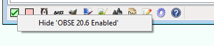
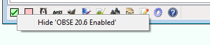

You can hide specific launcher icons, preventing them from being displayed, by right-clicking them and selecting Hide...
or by inserting a semicolon before their path in the bash.ini
.
- For example,
sPhotoshopPath=;C:\Program Files\Adobe\Photoshop 7.0\Photoshop.exe.
You can hide some of the toggle buttons using the bShowTes4... options in the Tool Options in the bash.ini
.
You can unhide launchers hidden through the right-click option using the Settings menu. See the Settings Menu for more information.
Custom Launchers Back to top
Custom launcher buttons may be added by putting a shortcut to the application you wish to have a launcher for in the Mopy\Apps directory. Wrye Bash will then use the following information from the shortcut:
- Icon
- Working directory
- Command line arguments
- Comments
If you want to have a custom icon for a launcher, place a PNG image with the same name as the shortcut, appending the icon size, in the same folder. For example:
- Notepadpp.lnk
- Notepadpp24.png
Note: 24x24 icons taken from shortcuts do not work well, so if you are using this size, be sure to include a custom icon. Icon size displayed can be adjusted in the bash.ini
or the Settings menu.
People Tab Back to top
Overview Back to top


The People tab functions as a simple database that can be used to keep notes on various people (eg. why you blocked a forum user, or what a good mod someone made).
People are listed in the column on the left, and the large text box on the right can be used for writing notes on the selected person. Notes are saved automatically as you type them, but otherwise the text box behaves as a simple text editor such as Notepad.
What Symbols & Colours Mean Back to top
| Checkbox Colours | |
|---|---|
| Checkbox | Meaning |
 | Person has +5 karma. |
 | Person has +3 or +4 karma. |
 | Person has +1 or +2 karma. |
 | Person has 0 karma. |
 | Person has -1 or -2 karma. |
 | Person has -3 or -4 karma. |
 | Person has -5 karma. |
The Karma column displays the karma level you have set for them. Karma is a simple way of rating your disposition towards a person. The Header column displays the first 75 characters of text in a person's notes. Clicking a column header will sort by that column.
Context Menu Commands Back to top
| Column Header & Person Context Menus | |
|---|---|
| Command | Description |
| Add... | Add a new person record to the list. |
| Delete | Delete a person record from the list. |
| Import... | Import a person record from an exported person record file. |
| Export... | Export a person record to a person record file. Exported person records are text files that contain the person's name and any notes you have on them. It doesn't export karma. |
| Columns | This submenu allows you to choose which columns are visible. |
| Karma | This submenu allows you to set a karma level for a person, ranging from +5 to -5. |
Settings Menu Back to top


The Settings menu is where Wrye Bash's global settings may be accessed.
It can be opened via Settings > Global Settings...
or by clicking on
the Settings button
in the status bar.
The layout varies from page to page, but a few buttons are always available:
| Globally Available Buttons | |
|---|---|
| Button | Description |
| Opens the Wrye Bash General Readme in a browser. | |
| OK | Applies all pending changes and closes the settings menu. |
| Cancel | Discards all pending changes and closes the settings menu. |
| Apply | Applies all pending changes, but keeps the settings menu open. |
Appearance: Colors Back to top

The Colors page can be used to change colors used by various GUI components of Wrye Bash. To change a component's color, first select it in the dropdown, then click on the square box to the right of the dropdown to choose a new color. Finally, apply it as usual.
The following buttons can also be used to reset, export and import colors:
| Colors Buttons | |
|---|---|
| Button | Function |
| Reset Color | Returns the currently selected component to its default color. |
| Reset All Colors | Returns all components to their default colors. |
| Export Colors... | Exports the colors you have selected to a text file, for backing up or sharing with other users. |
| Import Colors... | Imports a color scheme from a text file previously exported. |
Appearance: Language Back to top

The language page can be used to change the language that Wrye Bash will be displayed in. It is also the place to create, edit and manage localizations. See the Internationalisation section for more information.
The following buttons are available:
| Language Buttons | |
|---|---|
| Button | Function |
| Configure Editor... | Launches the Configure Editordialog, which allows you to choose and configure a localization editor. |
| Dump Localization... | Generates a new translation file for your currently chosen language. |
| Edit... | Launches the editor chosen via Configure Editor... to edit the selected localization. |
| Rename... | Allows you to rename the selected localization file. |
Appearance: Status Bar Back to top
The status bar page can be used to tweak the status bar at the bottom of the screen in various ways.
| Status Bar Options | |
|---|---|
| Option | Function |
| Show App Version | If enabled, the versions of applications will be shown in their launchers' tooltips on the status bar. |
| Icon Size | Choose between 16x16, 24x24, or 32x32 status bar icons. |
| Visible/Hidden Buttons | Allows you to manage which buttons will be shown on the status bar. To change a button's state, select it and use the left/right arrows to move it between the two lists. |
Backups Back to top
The backups page can be used to manage backups of various Wrye Bash-related files.
A full list of everything that Wrye Bash will back up follows:
- Your bash.ini, if present.
- The Wrye Bash-specific documents in
Data\Docs, likeBashed Patch, 0.htmlandBashed Patch, 0.txt. - The Mods, Installer, and Converter meta-data stored in
[Game] Mods. - Any user profiles you have created.
- Your application and UI settings.
- Your people from the People tab.
- Any translation files you have.
- All files in the
Data\Bash Patchesdirectory. - All files in the
Data\BashTagsdirectory. - All INI Tweaks.
Note that this does not include the actual packages from the Installers tab, only the state of those packages (i.e. which of them were installed)! If you want to fully back up your installation, make a manual backup of the packages in addition to Wrye Bash's backups.
| Backup Buttons | |
|---|---|
| Button | Function |
| Save Data | Normally, Wrye Bash saves its internal data files to disk only on closing. You can use this to force a save right now. |
| New Backup... | Backs up all the parts of Wrye Bash that can be changed by the user to a location of your choosing. See the list above for a rundown of what this will back up. |
| Restore... | Restores the selected backup. This will force a restart of Wrye
Bash to ensure the new settings take effect. We extract the
backup in a temporary folder, then we check that the backup is
for the current game and that the settings are not from a newer
WB version. Then we restart WB and apply the settings. Note
that if you have a bash.ini this will be copied in the Mopy
folder to a file named
bash(YEAR-MONTH-DAY hh.mm.sec).ini so you do not
lose your precious INI settings in case something goes
wrong. |
| Rename... | Allows you to rename the selected backup. |
| Delete... | Allows you to delete the selected backup. Deleted backups are sent to the recycling bin. |
Confirmations Back to top
The confirmations page can be used to enable or disable popups with a 'Don't show this in the future' option.
A checked entry in the list list means that no popup will show up in that situation anymore. Unchecking it will reenable the corresponding popup.
The Drop Action
dropdown is special, and allows you to change what
will happen when a file is dropped onto the Installers tab:
- Ask every time — Show a popup allowing you to select what to do every time a file is dropped.
- Copy — Make a copy of the dropped file and move that copy into the Installers directory.
- Move — Move the dropped file into the Installers directory.
The Show Internal Keys
checkbox is not very important, but might be
useful for debugging. It shows the internal keys that each entry in the
list uses to store its state.
General Back to top
The general page acts as a sort of catch-all page for settings that don't fit on any other page or aren't numerous enough to deserve their own page.
| General Options | |
|---|---|
| Option | Function |
| Managed Game | This dropdown lists the games that Wrye Bash supports and
detects as being installed. Selecting a game here and
applying will relaunch this Wrye
Bash installation with the -o argument. That means
the bash.ini settings and status bar launchers
from this installation will apply to the newly selected game as
well, which might not be what you expect. |
| Plugin Encoding | This dropdown allows you to select the encoding that Wrye Bash
assumes various plugin and save fields to be written in. If the
Automaticoption is selected, Wrye Bash attempts to detect the encoding automatically. If a plugin description, save location or player name is being displayed incorrectly, try selecting another encoding from this dropdown. |
| Debug Mode | Enables debug mode, which will enable extra debug prints and
will print errors into a BashBugDump.log instead
of showing them on screen. |
| Show Global Menu | If checked, a global menu will be shown above the tabs. If disabled, its options will still be accessible by right-clicking the columns. If you accidentally disabled it and want it back, you can use the Settings button to open the settings menu again and reenable it. |
| Use Alternate Wrye Bash Name | If checked, displays a game-specific name instead of Wrye Bash in the title bar instead. See the Title Bar Info section for more information. |
Trusted Binaries Back to top
The trusted binaries page can be used to choose which binaries (DLLs, EXEs, etc.) you trust. BAIN will skip installing untrusted binaries from packages, and a popup will be shown whenever a new one is encountered.
To change the status of a binary, select it and click the left/right arrow
buttons to move it between the trusted and untrusted lists. You can also
use the Export...
and Import...
buttons to save and load the
status of all binaries from a text file. The text file will include much
more information, like the CRCs and sizes that Wrye Bash is using to
identify binaries.
Miscellaneous Tools Back to top
Doc Browser Back to top

 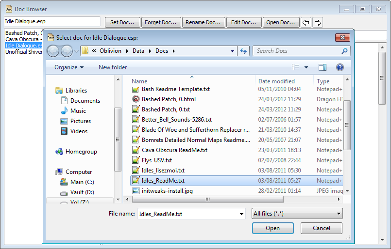
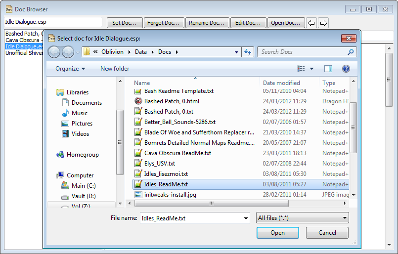
The Doc Browser allows you to quickly and easily scan through your mods' documentation. The supported document types are: text files, HTML files and MHT files (HTML archives). To display the Doc Browser, double click any plugin in the main list of the Mods tab.
When you double-click a plugin, Wrye Bash will open the Doc Browser and attempt to determine which document to associate with it. If it can determine one, it will display it. Otherwise, a blank page will be displayed. To associate a document with a plugin, use the Set Doc...
button in the Doc Browser. To disassociate a document with a plugin, use the Forget Doc
button in the Doc Browser.
You can also rename an associated document using the Rename Doc...
button to select a new name and/or location. The document will be renamed and/or moved to this location.
You can edit a document by ticking the Allow Editing
checkbox. The document can then be edited in the viewing window. To finish editing, uncheck the Allow Editing
checkbox again. Changes are automatically saved when you select a new plugin, close the Doc Browser or finish editing.
A document can be opened in its default external editor by clicking the Open Doc...
button.
A new document can be created for a plugin by clicking the Set Doc...
button and choosing a new filename. This creates a document using a blank template that you can then edit. The default template is Data\Docs\My Readme Template if it exists, or if not, Data\Docs\Bash Readme Template.txt. The latter is written in Wrye wiki text format, which will be displayed as HTML when the Doc Browser is not in edit mode.
To view a different document, select a different plugin in the list on the left of the Doc Browser or in the Mods tab.
Some notes on Doc Browser behaviour:
- If a plugin is renamed in the Mods tab, then any documents associated with it will become associated to the plugin's new name.
- If a plugin is copied in the Mods tab, then any documents associated with it will also become associated with the copy.
- Documents can be stored in any location, though
Data\Docsis the standard location. - If you delete a plugin, its documentation will not be deleted, but it will no longer be viewable through the Doc Browser.
- If you hide a plugin, its documentation will still be viewable through the Doc Browser.
Mod Checker Back to top
The Mod Checker checks your active and merged plugins for errors, and provides warnings for any found, as well as configuration recaps and suggestions. It can be opened by clicking the Mod Checker button in the status bar.
At the top of the report is the Active Mod Files section, which lists your load order. It also displays any warnings that are applicable beneath the plugin(s) that they are applicable to. These warnings are either regarding missing masters or delinquent masters.
- Missing masters occur when a plugin that an active plugin depends on is not active. This results in an immediate CTD when the game is launched.
- Delinquent masters occur when a plugin's master loads after the plugin itself. This should be fixed to prevent issues in-game.

| Mod Checker Controls | |
|---|---|
| Control | Function |
| Forward/Back Arrows | The Mod Checker report may contain links to other pages. These two buttons allow navigation between pages viewed, similar to the forward/back buttons in a web browser. |
| Reload | Reloads the current page. Works identically to a browser's reload button. |
| Mod List | Toggles the display of the Active Mod Files list. |
| Version Numbers | Toggles display of version numbers where found for the plugins in the Active Mod Files list. |
| CRCs | Toggles display of the CRCs for the plugins in the Active Mod Files list. |
| Scan for Dirty Edits | Toggles the scanning of plugins for dirty edits. Effectively runs Scan for Dirty Edits on each of the plugins in the Active Mod Files list and displays the results in the Mod Checker's report. |
| Copy Text | Copies the text of the report to the clipboard. Useful for posting on forums. |
| Update | Forces a refresh of the report. |
Oblivion.esm Swapping Back to top
Oblivion.esm swapping is a feature that allows mod authors to switch between different versions of Oblivion.esm on the fly. This is useful as it allows mod authors to make plugins that are totally SI-independent (as the Shivering Isles patches Oblivion.esm instead of using a new plugin). It can also be used to avoid the need for a fully patched Oblivion to run a plugin, but this usage is not recommended. If you want a plugin to work on older versions of Oblivion, use the Version 0.8 command on it.
The main requirement for swapping to work is that you have the necessary copies of the different Oblivion.esm files. This is only possible if you copy and rename Oblivion.esm before installing Shivering Isles. There are three accepted versions of Oblivion.esm in addition to the latest SI one. These are determined by their file size:
- 247388848 bytes: this is the 1.1 version. Rename it to
Oblivion_1.1.esm. - 247388812 bytes: this is the GOTY version without SI. Rename it to
Oblivion_GOTY non-SI.esm. - 247388894 bytes: this is an uncommon variant of the 1.1 version. Rename it to
Oblivion_1.1b.esm. - 260961973 bytes: this is the GBRPlus patched version. Rename it to
Oblivion_GBR SI.esm.
You can then swap between the different versions of Oblivion.esm using the Oblivion.esm submenu in the Mods tab column header context menu. Your currently active version will be checked, select another to swap them. You can also perform the same swapping in the Saves tab column header context menu, but in addition to the swapping this will also mark the selected version as the preferred version to use with the current Save Profile. If you then switch to another save profile and back to this one, Oblivion.esm will be swapped automatically.
Wrye Bash displays the current version of Oblivion.esm in its version indicators. The main indicator is in the title bar of the main Wrye Bash window, but there are also indicators placed after Oblivion.esm in the Mods tab plugin list, and after Oblivion.esm in the Masters tab for plugins and savegames. The three possible indicators are:
- [1.1]: You are currently using the 1.1 or 1.1b version of Oblivion.esm.
- [GOTY non-SI]: You are currently using the GOTY without SI installed version of Oblivion.esm.
- [SI]: You are currently using the Shivering Isles-patched version of Oblivion.esm.
- [GBR SI]: You are currently using the GBRPlus patched version of Oblivion.esm.
Keyboard Shortcuts Back to top
The following keyboard shortcuts can be used when a list on Bash has focus (work almost on all lists unless otherwise noted).
| Shortcut | Function |
|---|---|
ctrl-numpad plus (+) | Auto-sizes the columns to fit what is displayable. |
ctrl-a | Selects all. |
shift-ctrl-a | Deselects all. |
ctrl-o
| Opens the related data directory - for instance in the mods tab will open "Data/", in Ini Edits will open "Ini Tweaks/" etc. |
ctrl-c | Copies files to the clipboard (Mods, Saves, Installers, Screens) |
F2 | Rename file(s) (Saves, Installers, Screens) - see Rename menu items for details |
ctrl-z | Undo load order state change (Mods) |
ctrl-y | Redo load order state change (Mods) |
Command Line Arguments Back to top
The following table lists all command-line arguments Wrye Bash understands.
| Argument | Function |
|---|---|
-d, --debug
| Useful if bash is crashing on startup or if you want to print a lot of information (e.g. while developing or debugging). |
-L LANGUAGE, --language=LANGUAGE
| Specify the user language overriding the system language settings. |
| Path Arguments | All path arguments must be absolute paths and use either forward slashes (/) or two backward slashes (\\). All of these can also be set in the ini (where you can also use relative paths) and if set in both cmd line takes precedence. |
-o OBLIVIONPATH,
--oblivionPath=OBLIVIONPATH
| Specifies the game directory (the one containing the game's exe). Use this argument if Bash is located outside of the game directory and you have no ini option (or want to override the ini). Bash reads the windows registry to find supported games so this is not needed if the game entry is the only one present in the registry. See Alternative Install Locations |
| User Directory Arguments | These arguments allow you to specify your user directories in several ways. These are only useful if the regular procedure for getting the user directory fails. And even in that case, the user is probably better off installing win32com. |
-p PERSONALPATH,
--personalPath=PERSONALPATH
| Specify the user's personal directory. (Like "C:\\Documents
and Settings\\Wrye\\My Documents") If you need to set this then you
probably need to set -l too.
|
-u USERPATH, --userPath=USERPATH
| Specify the user profile path. May help if HOMEDRIVE and/or HOMEPATH are missing from the user's environment. |
-l LOCALAPPDATAPATH,
--localAppDataPath=LOCALAPPDATAPATH
| Specify the user's local application data directory. If you
need to set this then you probably need to set -p too.
|
| Backup and Restore Arguments | These arguments allow you to do backup and restore settings operations. |
-b, --backup
| Backup all Bash settings to an archive file before the app
launches. Either specify the filepath with the -f/--filename
options or Wrye Bash will prompt the user for the backup file path.
|
-r, --restore
| Restore all Bash settings from an archive file/dir before the app
launches. You must specify the filepath with the -f/--filename
options. Restoring from the command line skips all error checks that are done
in Restore... menu item.
|
-f FILENAME, --filename=FILENAME
| The file to use with the -r or -b
options. For -r must be a '.7z' backup file or a dir
where such a file was extracted. For -b must be a valid path
to a '.7z' file that will be overwritten if it exists.
|
-q, --quiet-quit
| Close Bash after creating or restoring backup and do not display any prompts or message dialogs. |
Internationalisation Back to top
Overview Back to top
Wrye Bash has built-in support for translation into other languages,
using text files that tell it which English strings in the source code
should be translated, and into what. These text files are found in
Mopy\bash\l10n\. New translations or updates to existing
translations should be presented to the Wrye Bash team so that they may be
included in future releases.
To begin translating, or to update an existing translation, use the following steps:
- Ensure you are running the Python version of Wrye Bash, as the standalone version does not include the source code, which is necessary for generating the translation file. See the Installation section of the General Readme for a short overview of how to install the Python version.
- Open the Settings Menu and navigate to the Appearance: Language page.
- If you haven't done so yet, click the
Configure Editor... button to
set up an editor for editing localization files:
- Click on
Browse...
and pick the editor's executable. - If necessary, edit the
Parameters
section. For example, if you're using Notepad++, you might want to add parameters like-multiInst -notabbar -nosession. - If your editor does not support opening Wrye Bash's
.txtfiles (Poedit, for example, does not), try checking theRename to .po
checkbox. This will make Wrye Bash rename the localization file right before launching the chosen editor, then rename it back to.txtafter you've finished editing to work around this. - Once you're done configuring the editor, click
OK
.
- Click on
- Click the Dump Localization... button. This generates a new version of the translation file for your locale. The new file will be named appropriately, except for the trailing "NEW", and will contain any translations already done.
- Select the newly created localization and click the Rename... button. Remove the trailing "NEW", but do not change the rest of the filename. Confirm that you want to replace the existing file when prompted.
- Select the now-renamed localization file again, and click the Edit... button. Your editor will be launched, allowing you to add or edit translations.
- Once you are done with editing, save and close the editor. Then click
the
OK
button on the popup in Wrye Bash. - To test a translation, make sure the matching language is selected in
the
Change Language
dropdown and restart Wrye Bash.
Translator File Format Back to top
Below is an excerpt from a translator file.
#: bash\basher.py:10106
msgid "Active profile cannot be removed"
msgstr "Aktives Profil kann nicht entfernt werden"
#: bash\basher.py:10112
msgid "Delete profile %s and the %d save files it contains?"
msgstr "Möchten Sie das Profil %s und die %d saves, die es enthält, löschen?"
The above contains two separate translation entries. Each entry begins with the source code file and line number the string to be translated is found on.
The file line is followed by msgid and the original text
string. Lastly, msgstr introduces the translated text
string.
Note: It is important that the formatting characters are
not removed or moved or added to. Formatting characters are those that
start with a percentage sign, e.g. %s, %u,
%08X, etc. If a formatting character is missing or incorrect,
Wrye Bash will most likely crash.